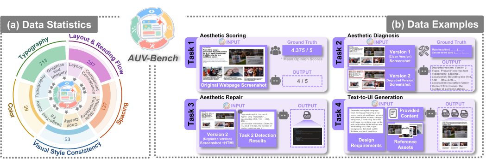
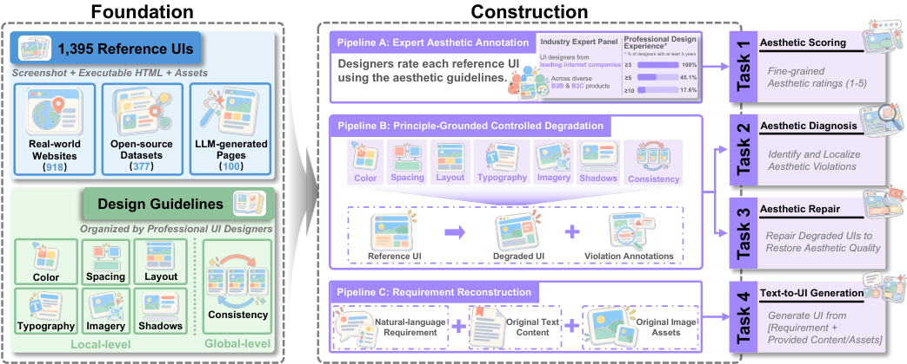
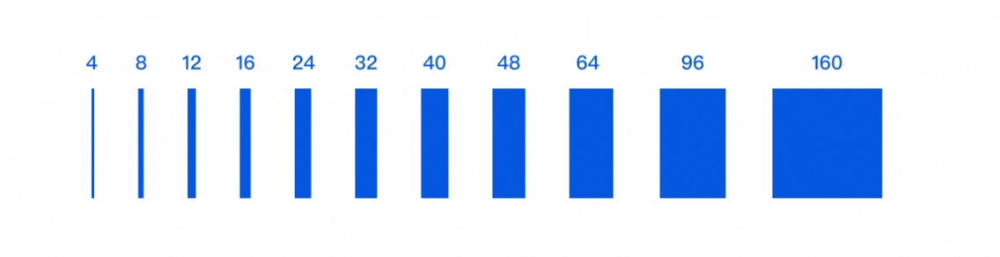
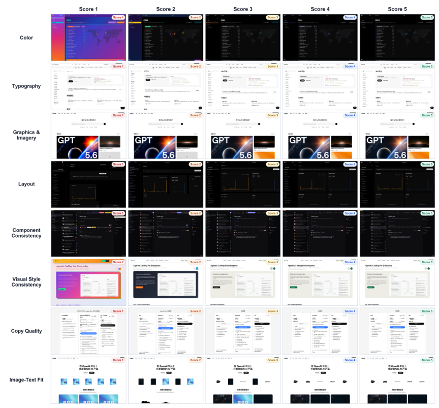
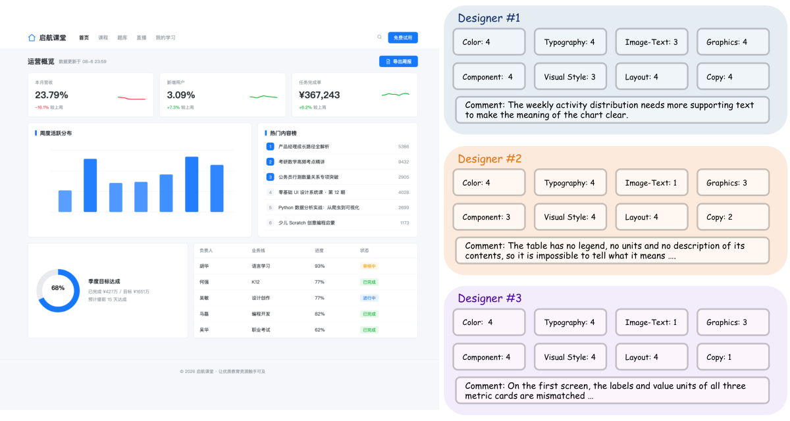
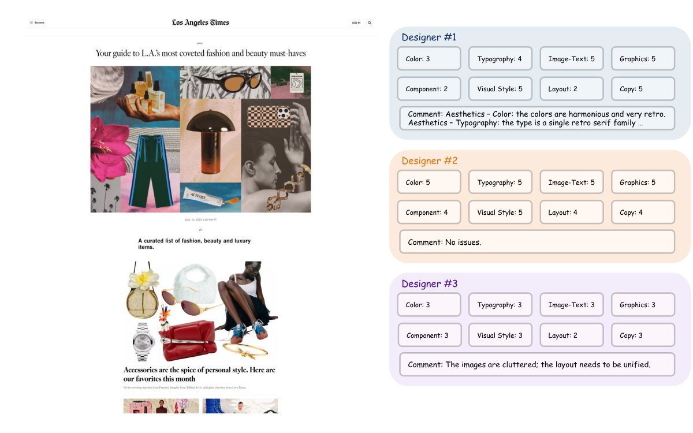
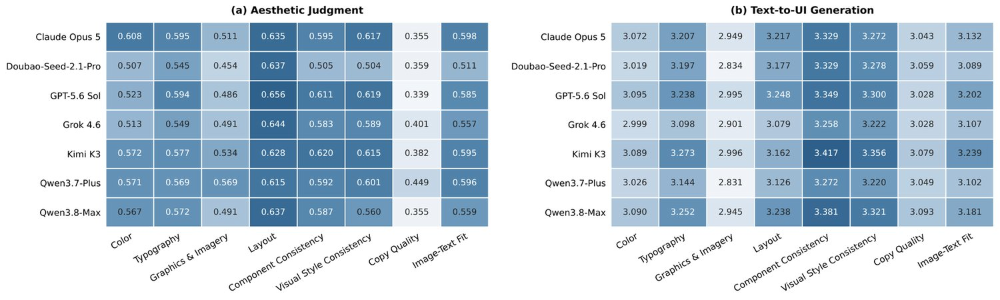
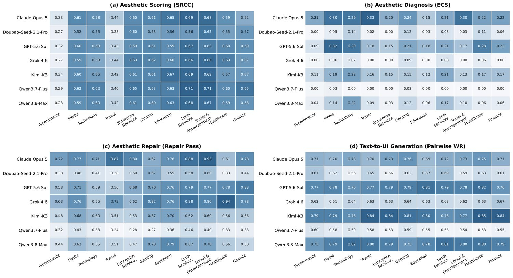
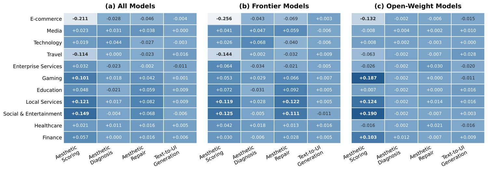

AUV-Bench：面向用户界面的美学理解与生成能力评测
AUV-Bench: Aesthetic Understanding and Generation Evaluation for User Interfaces
中文摘要
Abstract (原文)
Multimodal foundation models are increasingly used for evaluating and generating user interfaces (UIs), often producing seemingly reasonable aesthetic judgments and visually plausible pages. However, under professional design scrutiny, their behavior can differ substantially from that of human designers. In professional design practice, designers rely on a systematic set of aesthetic principles that consistently guide judgment, diagnosis, repair, and creation. A coherent aesthetic capability should therefore connect aesthetic judgment with design actions. Existing evaluations, however, typically assess these abilities in isolation, making it difficult to determine whether task-level success reflects a shared aesthetic understanding or merely fragmented task-specific competence. To address this gap, we introduce AUV-Bench, developed in collaboration with professional UI designers around 1,395 executable web interfaces and four tasks: aesthetic scoring, diagnosis, repair, and text-to-UI generation. The tasks share a pool of UIs and aesthetic principles, with diagnosis and repair further aligned on 660 controlled-degradation instances to enable instance-level analysis of judgment and action. Evaluation of 12 models reveals a capability imbalance: models show moderate agreement with professional designers in holistic aesthetic scoring, yet exact diagnosis-chain success peaks at only 24.7%. On the aligned diagnosis–repair cases, correct judgments and successful repairs do not consistently coincide, exposing a Judgment–Action Gap between identifying aesthetic problems and successfully acting on them. In open-ended generation, even leading models achieve only moderate aesthetic quality under human-calibrated evaluation. Overall, current models exhibit partial aesthetic competence, but still lack the fine-grained understanding and judgment–action coherence required for reliable UI design. Our code and dataset are available at https://github.com/yuu250/AUV_Bench.
1 Introduction
1 引言
Multimodal foundation models are increasingly taking on the dual roles of “critics” and “designers” of user interfaces (UIs): they can evaluate the visual quality of interfaces (Duan et al., 2024; Chen et al., 2024; Chen et al., 2025) and generate visually plausible webpages from visual or natural-language requirements (Si et al., 2025; Awal et al., 2025). Yet under professional design scrutiny, both their aesthetic judgments and generated interfaces still exhibit substantial gaps from those of experienced human designers (Huang et al., 2024b; An et al., 2026a). More importantly, evaluating these abilities in isolation cannot reveal whether they are supported by a shared and transferable understanding of aesthetic principles, or merely reflect task-specific competence. In professional design practice, experienced designers internalize accumulated aesthetic knowledge and design experience into stable judgment criteria, and consistently apply them across interface evaluation, problem diagnosis, design repair, and open-ended creation (Cross, 2004; Lawson, 2004). Therefore, a model with mature UI aesthetic capability should not merely perform well on individual tasks; its aesthetic knowledge should transfer across tasks and consistently connect design judgment with corresponding design actions. We define this consistency as Aesthetic Judgment–Action Coherence. This raises a central question: Have current multimodal models developed a coherent capability that connects aesthetic judgment with design action?
多模态基础模型正越来越多地承担起用户界面（UI）的“评判者”与“设计者”双重角色：它们既能评估界面的视觉质量（Duan 等，2024；Chen 等，2024；Chen 等，2025），也能依据视觉需求或自然语言需求生成视觉上看似合理的网页（Si 等，2025；Awal 等，2025）。然而在专业设计的审视之下，其美学判断与所生成的界面同经验丰富的人类设计师之间仍存在可观差距（Huang 等，2024b；An 等，2026a）。更关键的是，孤立地评测这些能力，无法揭示它们究竟由一套可共享、可迁移的美学原则理解所支撑，还是仅仅反映任务专属的胜任力。在专业设计实践中，资深设计师会把长期积累的美学知识与设计经验内化为稳定的判断准则，并在界面评估、问题诊断、设计修复与开放式创作中一贯地加以运用（Cross，2004；Lawson，2004）。因此，具备成熟 UI 美学能力的模型不应只在单项任务上表现良好，其美学知识还应跨任务迁移，并持续地把设计判断与相应的设计行动衔接起来。我们把这种一致性定义为美学判断—行动一致性（Aesthetic Judgment–Action Coherence）。由此引出一个核心问题：当前的多模态模型是否已经形成了把美学判断与设计行动贯通起来的连贯能力？
Existing evaluations are not yet well suited to systematically answer this question. As shown in Table 1, prior work has primarily followed two directions: one focuses on UI generation, editing, and front-end implementation, evaluating visual fidelity, functional correctness, and executability (Lin et al., 2025; Liu et al., 2026; Lu et al., 2026; Deng et al., 2025a); the other focuses on aesthetic understanding, evaluating scoring, design feedback, and defect localization (Wang et al., 2026; Lin et al., 2024; Du et al., 2026; Wu et al., 2026a; Deng et al., 2026). However, these evaluations typically treat performance on individual tasks as separate endpoints. Successfully generating a visually reasonable interface does not directly indicate that a model can reliably judge its design quality; likewise, accurately identifying an aesthetic issue does not guarantee that the corresponding judgment can guide an effective repair. Studying this connection requires evaluation to be organized around shared aesthetic principles, with judgment and corrective action aligned on the same interface and target defect. Existing evaluations provide limited support for such principle-level and instance-level linkage, making it difficult to determine whether success across different tasks reflects the consistent use of aesthetic design knowledge (Imteyaz et al., 2026; An et al., 2026a).
现有评测尚不足以系统地回答这一问题。如表 1 所示，已有工作主要沿两条路径展开：一条聚焦 UI 生成、编辑与前端实现，评估视觉保真度、功能正确性与可执行性（Lin 等，2025；Liu 等，2026；Lu 等，2026；Deng 等，2025a）；另一条聚焦美学理解，评估评分、设计反馈与缺陷定位（Wang 等，2026；Lin 等，2024；Du 等，2026；Wu 等，2026a；Deng 等，2026）。然而，这类评测通常把各任务上的表现视为彼此独立的终点。成功生成一个视觉上合理的界面，并不直接说明模型能可靠地判断其设计质量；同样，准确识别出某一美学问题，也不保证相应判断能够指导一次有效的修复。研究这一关联，需要评测围绕共享的美学原则来组织，并在同一界面、同一目标缺陷上把判断与纠正行动对齐。现有评测对此类原则级与实例级的联动支持有限，因而难以判定不同任务上的成功是否反映了美学设计知识的一致运用（Imteyaz 等，2026；An 等，2026a）。
表 1：现有基准在评测 UI 美学判断与设计行动的关键维度上的对比。Expert Aesthetic GT 表示美学真值是否由专业设计师或相关领域专家提供或校验；Principle-Grounded 表示是否依据预定义的美学设计原则进行显式评测；Controlled Violations 表示是否对特定美学原则实施受控操纵；Judgment–Action Linkage 表示美学诊断与纠正行动是否直接配对在同一界面与同一受控美学违例上，从而支持对判断—行动一致性的实例级分析。✓ 与 ✗ 分别表示支持与不支持。
| Benchmark | Benchmark Setup | Principle Grounding | Core Capabilities | Judgment–Action Linkage | Statistics | ||||||
| Executable UI | Expert Aesthetic GT | Principle- Grounded | Controlled Violations | Aesthetic Scoring | Aesthetic Diagnosis | Aesthetic Repair | Text-to-UI Generation | Domain | Scale | ||
| Benchmarks for UI Generation | |||||||||||
| Design2Code (Si et al., 2025) | ✓ | ✗ | ✗ | ✗ | ✗ | ✗ | ✗ | ✗ | ✗ | Web UI | 484 pages |
| WebUIBench (Lin et al., 2025) | ✓ | ✗ | ✗ | ✗ | ✗ | ✗ | ✗ | ✗ | ✗ | Web UI | 21K QA / 0.7K+ sites |
| WebMMU (Awal et al., 2025) | ✓ | ✗ | ✗ | ✗ | ✗ | ✗ | ✗ | ✗ | ✗ | Web UI | 8.1K tasks / 2,059 pages |
| WebGen-Bench (Lu et al., 2026) | ✓ | ✗ | ✗ | ✗ | ✗ | ✗ | ✗ | ✓ | ✗ | Web App | 647 tests |
| WebCoderBench (Liu et al., 2026) | ✓ | ✗ | ✗ | ✗ | ✗ | ✗ | ✗ | ✓ | ✗ | Web App | 1,572 requirements |
| UI-Bench (Jung et al., 2025) | ✓ | ✓ | ✗ | ✗ | ✗ | ✗ | ✗ | ✓ | ✗ | Web UI | 300 sites / 4K+ judgments |
| Benchmarks for Aesthetic Evaluation | |||||||||||
| UICrit (Duan et al., 2024) | ✗ | ✓ | ✗ | ✗ | ✓ | ✓ | ✗ | ✗ | ✗ | Mobile UI | 983 UIs / 3,059 critiques |
| DesignProbe (Lin et al., 2024) | ✗ | ✓ | ✗ | ✗ | ✗ | ✗ | ✗ | ✗ | ✗ | Graphic Design | 1.6K questions |
| PhotoBench (Qi et al., 2025) | ✗ | ✗ | ✗ | ✗ | ✓ | ✗ | ✗ | ✗ | ✗ | Photography | 1.5K questions |
| AesEval-Bench (An et al., 2026a) | ✗ | ✗ | ✓ | ✓ | ✓ | ✓ | ✗ | ✗ | ✗ | Graphic Design | 4.5K QA / 1.2K designs |
| AesGuide (Du et al., 2026) | ✗ | ✓ | ✗ | ✗ | ✓ | ✓ | ✗ | ✗ | ✗ | Photography | 1K eval / 10.7K total |
| AUV-Bench | ✓ | ✓ | ✓ | ✓ | ✓ | ✓ | ✓ | ✓ | ✓ | Web UI | 1,395 base UIs |
To address this gap, we introduce AUV-Bench, an Aesthetic Understanding and generation eValuation for UIs. An overview of AUV-Bench is shown in Figure 1. We work with experienced UI designers to organize systematic aesthetic principles, recruit 51 professional designers for human annotation, and construct a shared data foundation containing 1,395 executable Web UIs. Based on this foundation, Aesthetic Scoring and Aesthetic Diagnosis evaluate aesthetic understanding, while Aesthetic Repair and Text-to-UI Generation evaluate design action.
为弥补这一缺口，我们提出 AUV-Bench——一个面向 UI 的美学理解与生成能力评测基准。图 1 给出了 AUV-Bench 的整体概览。我们与资深 UI 设计师共同梳理出系统的美学原则，招募 51 位专业设计师完成人工标注，并构建起包含 1,395 个可执行 Web UI 的共享数据底座。在此基础上，美学评分（Aesthetic Scoring）与美学诊断（Aesthetic Diagnosis）用于评估美学理解，美学修复（Aesthetic Repair）与文本到 UI 生成（Text-to-UI Generation）用于评估设计行动。
To further study Aesthetic Judgment–Action Coherence, we use controlled degradations to align diagnosis and repair on the same webpage, and introduce Judgment–Action Association (JAA) to measure the instance-level association between judgment correctness and repair success. Our systematic evaluation reveals clear imbalances across aesthetic capabilities: frontier models show moderate agreement with expert judgments in holistic aesthetic scoring, while precise defect attribution and localization remain more challenging; correct judgments and successful repairs are generally positively associated, yet they do not form a stable correspondence, revealing a clear Judgment–Action Gap. In open-ended generation, even relatively strong models achieve only moderate aesthetic quality under human-calibrated evaluation, further distinguishing relative model advantages from design quality measured on a professional rating scale. Our main contributions are as follows:
为深入考察美学判断—行动一致性，我们借助受控退化把诊断与修复对齐到同一网页，并引入判断—行动关联度（Judgment–Action Association，JAA）来度量判断正确性与修复成功之间的实例级关联。系统评测揭示出各项美学能力之间存在明显失衡：前沿模型在整体性美学评分上与专家判断呈中等一致性，而精确的缺陷归因与定位仍更为困难；正确的判断与成功的修复总体呈正相关，但两者并未形成稳定的对应关系，暴露出一条清晰的判断—行动鸿沟（Judgment–Action Gap）。在开放式生成中，即便较强的模型在人工校准评测下也只达到中等美学质量，这进一步把模型间的相对优势与专业评分尺度下的设计质量区分开来。本文的主要贡献如下：
A unified benchmark for UI aesthetic understanding and design action. Unlike existing benchmarks that evaluate aesthetic understanding or UI generation in isolation, AUV-Bench evaluates scoring, diagnosis, repair, and text-to-UI generation over 1,395 executable web interfaces, enabling unified evaluation from judgment to action.
• 面向 UI 美学理解与设计行动的统一基准。与孤立评测美学理解或 UI 生成的现有基准不同，AUV-Bench 在 1,395 个可执行 Web 界面上同时评测评分、诊断、修复与文本到 UI 生成，实现从判断到行动的统一评测。
A principle-grounded protocol for cross-task aesthetic evaluation. We operationalize professional aesthetic principles into task-specific evaluation criteria and 13 controlled source-level violations with executable verification. Diagnosis and repair are further paired on 660 controlled-degradation instances, enabling direct instance-level measurement of whether aesthetic judgments translate into corrective actions.
• 面向跨任务美学评测的原则驱动协议。我们把专业美学原则落实为任务专属的评测准则与 13 类带可执行校验的受控源码级违例，并进一步把诊断与修复配对在 660 个受控退化实例上，从而可直接以实例级方式度量美学判断是否转化为纠正行动。
New empirical insights into the limits of current UI aesthetic capabilities. Models show moderate holistic aesthetic judgment, yet exact fine-grained diagnosis peaks at only 24.7%. More importantly, successful repair does not consistently coincide with correct explicit judgment, while strong relative generation performance still yields only moderate absolute aesthetic quality, revealing substantial gaps between apparent task competence and coherent aesthetic understanding.
• 关于当前 UI 美学能力边界的新实证发现。模型具备中等程度的整体性美学判断能力，但精确细粒度诊断的成功率最高仅为 24.7%。更重要的是，修复成功并不总是与正确的显式判断同时发生，而强劲的相对生成表现仍只换来中等的绝对美学质量，这揭示出表面的任务胜任力与连贯的美学理解之间仍存在可观差距。

图 1：AUV-Bench 概览。(a) 数据统计与 (b) 四个任务的代表性数据样例，涵盖美学理解（美学评分与美学诊断）与设计行动（美学修复与文本到 UI 生成）。
2 Related Work
2 相关工作
UI Generation and Front-End Development. Early works such as Rico, pix2code, and GUI skeleton generation established large-scale UI modeling and visual-to-code generation (Deka et al., 2017; Beltramelli, 2018; Chen et al., 2018). More recent systems, including Design2Code, Sketch2Code, and UI2Code, advance webpage reconstruction, code generation, and iterative refinement (Si et al., 2025; Li et al., 2025; Yang et al., 2025; Wan et al., 2025). WebUIBench, FullFront, WebMMU, and DesignBench broaden evaluation to UI understanding and general front-end capabilities (Lin et al., 2025; Sun et al., 2025; Awal et al., 2025; Xiao et al., 2025; He et al., 2026), while FrontendBench, WebGen-Bench, and WebCoderBench emphasize executable and functional correctness (Zhu et al., 2025; Lu et al., 2026; Liu et al., 2026). More recently, UI-Bench evaluates the design quality of generated interfaces, and Design Theater studies whether design reasoning supports downstream implementation (Jung et al., 2025; Imteyaz et al., 2026). These works increasingly extend UI evaluation from reconstruction and functionality toward design quality and action.
UI 生成与前端开发。Rico、pix2code 与 GUI 骨架生成等早期工作奠定了大规模 UI 建模与视觉到代码生成的基础（Deka 等，2017；Beltramelli，2018；Chen 等，2018）。Design2Code、Sketch2Code、UI2Code 等较新的系统则推进了网页重建、代码生成与迭代精修（Si 等，2025；Li 等，2025；Yang 等，2025；Wan 等，2025）。WebUIBench、FullFront、WebMMU 与 DesignBench 把评测拓展到 UI 理解与通用前端能力（Lin 等，2025；Sun 等，2025；Awal 等，2025；Xiao 等，2025；He 等，2026），而 FrontendBench、WebGen-Bench 与 WebCoderBench 强调可执行性与功能正确性（Zhu 等，2025；Lu 等，2026；Liu 等，2026）。更近期地，UI-Bench 评估生成界面的设计质量，Design Theater 研究设计推理能否支撑下游实现（Jung 等，2025；Imteyaz 等，2026）。这些工作正把 UI 评测从重建与功能逐步推向设计质量与设计行动。
Aesthetic and Design Evaluation. Computational aesthetics has traditionally focused on holistic preference prediction, as exemplified by AVA and NIMA (Murray et al., 2012; Talebi and Milanfar, 2018). With multimodal models, AesBench evaluates aesthetic understanding, while DesignProbe and GPT-based evaluation examine reasoning over design properties and principles (Huang et al., 2024b; Lin et al., 2024; Haraguchi et al., 2024; Lin et al., 2026). UICrit introduces structured and localized UI critiques, while DesignPref studies individual visual-design preferences (Duan et al., 2024; Peng et al., 2025; Ko et al., 2026). Recent benchmarks move toward finer-grained analysis: AesEval-Bench covers aesthetic scoring and defect localization, UXBench evaluates detailed UI and UX reasoning, and UXBench-Actionability measures whether critiques support downstream repair (An et al., 2026a; Mao et al., 2026; Wang et al., 2026; Jeon et al., 2026). However, these works typically evaluate aesthetic scoring, diagnosis, repair, or generation separately, or connect only a subset of them. AUV-Bench instead places all four capabilities under shared professional aesthetic principles, enabling systematic analysis of how aesthetic judgment translates into design action.
美学与设计评测。计算美学传统上聚焦整体性偏好预测，AVA 与 NIMA 即为代表（Murray 等，2012；Talebi 与 Milanfar，2018）。进入多模态模型时代后，AesBench 评测美学理解，DesignProbe 与基于 GPT 的评测考察模型对设计属性与设计原则的推理（Huang 等，2024b；Lin 等，2024；Haraguchi 等，2024；Lin 等，2026）。UICrit 引入结构化、可定位的 UI 批评，DesignPref 研究个体化的视觉设计偏好（Duan 等，2024；Peng 等，2025；Ko 等，2026）。近期基准进一步走向细粒度分析：AesEval-Bench 覆盖美学评分与缺陷定位，UXBench 评测细粒度的 UI 与 UX 推理，UXBench-Actionability 度量批评意见能否支撑下游修复（An 等，2026a；Mao 等，2026；Wang 等，2026；Jeon 等，2026）。然而，这些工作通常把美学评分、诊断、修复或生成分开评测，或只将其中的一部分关联起来。AUV-Bench 则把四项能力统一置于同一套专业美学原则之下，从而能够系统分析美学判断如何转化为设计行动。
3 AUV-Bench
3 AUV-Bench
This section presents the design of AUV-Bench, including its task formulation, benchmark construction, and evaluation protocol.
本节介绍 AUV-Bench 的设计，包括任务定义、基准构建与评测协议。
3.1 Overview
3.1 概览
AUV-Bench evaluates UI aesthetics through four complementary capabilities built on a shared pool of executable reference UIs and professional aesthetic guidelines. Specifically, we introduce four tasks: (1) Aesthetic Scoring takes a UI image as input and outputs eight dimension-level aesthetic scores on a 1–5 scale, measuring holistic aesthetic judgment; (2) Aesthetic Diagnosis takes a pair of clean and degraded UI images and outputs the detected aesthetic violation(s) together with their affected regions, evaluating principle-level diagnosis and localization; (3) Aesthetic Repair takes a degraded UI image, its HTML source code, and the model’s own diagnosis, and outputs a source-code patch that corrects the identified aesthetic issues; and (4) Text-to-UI Generation takes a natural-language webpage requirement together with textual content and image assets, and outputs an executable webpage without access to a reference screenshot. Aesthetic Diagnosis and Aesthetic Repair share the same controlled degradation instances, enabling direct instance-level analysis of judgment–action alignment.
AUV-Bench 基于共享的可执行参考 UI 池与专业美学准则，通过四项互补能力评测 UI 美学。具体而言，我们设置四个任务：(1) 美学评分以 UI 图像为输入，在 1–5 分量表上输出八个维度级美学分数，度量整体性美学判断；(2) 美学诊断以干净与退化 UI 图像对为输入，输出检出的美学违例及其受影响区域，评价原则级诊断与定位能力；(3) 美学修复以退化 UI 图像、其 HTML 源码以及模型自身的诊断为输入，输出修正所识别美学问题的源码补丁；(4) 文本到 UI 生成以自然语言网页需求、文本内容与图像素材为输入，在无法访问参考截图的情况下输出可执行网页。美学诊断与美学修复共享同一批受控退化实例，从而支持对判断—行动对齐关系的直接实例级分析。
3.2 Dataset Statistics
3.2 数据集统计
AUV-Bench comprises 1,395 executable reference UIs covering 11 industry categories and 12 page types (Figure 2). The crawled subset spans 386 web domains, and textual content covers 29 languages. Aesthetic Scoring and Text-to-UI Generation use all pages, while Aesthetic Diagnosis and Aesthetic Repair share 660 controlled-degradation cases with 1,209 annotated aesthetic violations across 13 rule types. Counting each task independently yields 4,110 evaluation instances. Aesthetic Scoring retains ratings from 44 professional UI designers after quality control. Further details are provided in Appendix C.
AUV-Bench 包含 1,395 个可执行参考 UI，覆盖 11 个行业类别与 12 种页面类型（图 2）。爬取子集横跨 386 个 Web 域名，文本内容覆盖 29 种语言。美学评分与文本到 UI 生成使用全部页面，美学诊断与美学修复共享 660 个受控退化样例，含 1,209 条标注美学违例，涵盖 13 类规则。按任务独立计数，共得到 4,110 个评测实例。经质量控制后，美学评分保留了 44 位专业 UI 设计师的评分。更多细节见附录 C。
图 2：1,395 个参考 UI 的分布。(a) 数据来源。(b) 行业类别。(c) 页面类型。
3.3 Task Formulation
3.3 任务定义
Let and denote a UI’s executable HTML source and rendered screenshot. Superscripts and denote reference and degraded versions; controlled degradation injects aesthetic violations while preserving content. Aesthetic Scoring predicts eight-dimensional scores from , using designer mean opinion scores (MOS) as targets. Aesthetic Diagnosis and Aesthetic Repair share instances with violation annotations specifying affected aesthetic dimensions and regions. Diagnosis identifies the degraded screenshot and predicts the corresponding annotations ; repair uses to correct the violations. For Text-to-UI Generation, comprises the webpage requirement, textual content, and image assets; the model generates source , rendered as , without access to .
令 与 分别表示 UI 的可执行 HTML 源码与渲染截图；上标 与 分别表示参考版本与退化版本；受控退化在保持内容不变的前提下注入美学违例。美学评分由 预测八维分数 ，以设计师平均意见分（MOS） 为目标。美学诊断与美学修复共享带有违例标注 的实例，该标注指明受影响的美学维度与区域。诊断任务识别退化截图并预测相应标注 ；修复任务利用 纠正这些违例。对文本到 UI 生成， 由网页需求、文本内容与图像素材构成；模型生成源码 ，渲染为 ，且无法访问 。
3.4 Benchmark Construction
3.4 基准构建

图 3：AUV-Bench 构建流程概览。以 1,395 个可执行 UI 与专业美学准则为起点，经由专家标注、受控退化与需求重建构建出四项互补任务。受控退化流程从全部七个准则维度中取材，并保留五个可操作类别用于源码级编辑与校验。
Figure 3 summarizes our construction pipeline. We build four tasks from 1,395 executable reference UIs through expert annotation, controlled aesthetic degradation, and requirement reconstruction. Professional UI designers co-develop the guidelines and review reference pages, degradation rules, and reconstructed requirements.
图 3 概括了我们的构建流程。我们以 1,395 个可执行参考 UI 为基础，通过专家标注、受控美学退化与需求重建构建出四项任务。专业 UI 设计师共同参与准则制定，并对参考页面、退化规则与重建需求进行审阅。
Professional Aesthetic Guidelines. Together with three senior UI designers, each with at least five years of industry experience at leading Internet companies, we develop aesthetic guidelines grounded in HCI and visual-design principles across seven dimensions: color, spacing, layout, typography, imagery, shadows, and global visual consistency. These guidelines define a shared design-principle space, which we further adapt to the evaluation objectives of different tasks. For Aesthetic Scoring, we reorganize the principles into eight perceptually coherent dimensions that can be reliably judged from rendered UIs: color, typography, graphics and imagery, layout, component consistency, visual-style consistency, copy quality, and image–text fit. Each dimension is rated on a shared 1–5 scale; detailed definitions are provided in Table 7. For Aesthetic Diagnosis and Aesthetic Repair, we retain principles that can yield perceptible, localizable, and attributable violations while supporting source-level editing and post-rendering verification. We organize them into five operational dimensions: typography, layout and reading flow, spacing, visual-style consistency, and color, and further instantiate 13 controlled aesthetic violation rules, detailed in Table 9.
专业美学准则。我们与三位资深 UI 设计师合作（均在头部互联网企业拥有至少五年行业经验），制定了植根于 HCI 与视觉设计原则的美学准则，覆盖色彩、间距、布局、字体排印、图像、阴影与整体视觉一致性七个维度。这套准则定义了一个共享的设计原则空间，我们进一步针对不同任务的评测目标加以适配。对美学评分，我们把原则重组为八个可从渲染 UI 上可靠判断的感知一致维度：色彩、字体排印、图形与图像、布局、组件一致性、视觉风格一致性、文案质量与图文契合度。每个维度沿用同一套 1–5 分量表，详细定义见表 7。对美学诊断与美学修复，我们保留那些能产生可感知、可定位、可归因违例，同时支持源码级编辑与渲染后校验的原则，将其组织为五个可操作维度：字体排印、布局与阅读流、间距、视觉风格一致性与色彩，并进一步实例化 13 条受控美学违例规则，详见表 9。
For Aesthetic Diagnosis and Aesthetic Repair, the evaluation must instead correspond to specific aesthetic problems that can be explicitly identified and corrected. We therefore reorganize principles that admit perceptible, localizable, and attributable violations, while also supporting source-level modification and post-rendering verification, into five operational dimensions: typography, layout and reading flow, spacing, visual-style consistency, and color. Within these dimensions, we further instantiate the relevant design principles as 13 executable aesthetic violation rules, which are used to construct controlled degradations and define corresponding diagnosis and repair targets. The complete rule set is provided in Table 9.
对美学诊断与美学修复而言，评测必须对应到可被显式识别与纠正的具体美学问题。因此，我们把能够产生可感知、可定位、可归因违例、同时又支持源码级修改与渲染后校验的原则重组为五个可操作维度：字体排印、布局与阅读流、间距、视觉风格一致性与色彩。在这些维度内，我们进一步把相关设计原则实例化为 13 条可执行的美学违例规则，用于构建受控退化并定义相应的诊断与修复目标。完整规则集见表 9。
Aesthetic Scoring Annotation. Each reference UI is initially rated independently by three professional designers using the shared eight-dimensional, 1–5 rubric. Annotators follow common rating criteria and review visual exemplars to calibrate their interpretation of the scale. After annotator-level quality control, retained ratings are aggregated into dimension-level MOS, which serve as evaluation targets.
美学评分标注。每个参考 UI 先由三位专业设计师依据共享的八维 1–5 分量表独立评分。标注者遵循统一的评分标准，并通过审阅视觉样例校准各自对量表的理解。经过标注者层面的质量控制后，保留下来的评分被聚合为维度级 MOS，作为评测目标。
Principle-Grounded Controlled Degradation. We first screen reference UIs for rule applicability and existing violations, applying a degradation only when the required structure is present and the target region satisfies the corresponding principle. Each intervention alters a small subset of eligible elements; designers iteratively review the rules and perturbation parameters. Automatic validation retains samples only when the intended defects are perceptible and localized, the detected violation set matches the injected recipe, and no unintended layout changes or unrelated aesthetic violations occur. We construct single-violation and compositional cases at mild and severe levels. Each retained case includes reference and degraded UIs with violation annotations, shared by Diagnosis and Repair.
原则驱动的受控退化。我们首先筛查参考 UI 的规则适用性以及是否已存在违例，仅当所需结构存在且目标区域满足相应原则时才施加退化。每次干预只改动一小部分符合条件的元素；设计师对规则与扰动参数进行迭代审阅。自动校验仅在以下条件同时满足时保留样本：预期缺陷可感知且可定位、检出的违例集合与注入配方一致、且未引发非预期的布局变化或无关的美学违例。我们构建单违例与组合违例样例，并区分轻度与重度两个等级。每个保留样例都包含参考 UI、退化 UI 以及违例标注，由诊断与修复两个任务共享。
Requirement Reconstruction. For Text-to-UI Generation, GPT-5.4 reconstructs an English requirement from each reference UI, describing its purpose, information structure, major functions, and overall visual direction while omitting precise visual parameters. Professional UI designers review each requirement and its objectively verifiable checklist, preserving functional intent while leaving visual implementation choices to the evaluated model.
需求重建。对文本到 UI 生成，GPT-5.4 从每个参考 UI 重建出一条英文需求，描述其用途、信息结构、主要功能与整体视觉方向，同时略去精确的视觉参数。专业 UI 设计师审阅每条需求及其可客观核验的清单，在保留功能意图的同时把视觉实现的选择权留给被评测模型。
Details of the guidelines, annotation, reference UI collection, controlled degradation, and requirement reconstruction are provided in Appendices A, B, C.1, C.2, and C.3, respectively.
准则、标注、参考 UI 采集、受控退化与需求重建的细节分别见附录 A、B、C.1、C.2 与 C.3。
3.5 Evaluation Protocol
3.5 评测协议
We evaluate multimodal foundation models across four complementary tasks, covering aesthetic scoring, diagnosis, repair, and open-ended UI generation.
我们在四项互补任务上评测多模态基础模型，覆盖美学评分、诊断、修复与开放式 UI 生成。
Task 1: Aesthetic Scoring. For instance , the model predicts from on a 1–5 scale. We compare with using Spearman Rank Correlation (SRCC) and Mean Absolute Error (MAE), measuring ranking agreement and absolute error, respectively. Both metrics are computed across instances for each dimension and averaged equally across all eight dimensions.
任务 1：美学评分。对实例 ，模型在 1–5 分量表上由 预测 。我们分别用斯皮尔曼等级相关（Spearman Rank Correlation，SRCC）与平均绝对误差（Mean Absolute Error，MAE）比较 与 ，前者度量排序一致性，后者度量绝对误差。两项指标在各个维度上按实例计算，并在全部八个维度上等权平均。
Task 2: Aesthetic Diagnosis. We randomly order and as candidates and . The model identifies the degraded candidate and predicts , evaluated against . For degradation detection, we report Balanced Accuracy (BAcc), defined as , where the two recalls correspond to instances with the first or second candidate degraded, respectively. For violation attribution, the labels are the five aesthetic dimensions: typography, layout and reading flow, spacing, visual style consistency, and color. We use detection-gated Macro-, where and . Here, indexes the five attribution dimensions, and and denote their true-positive and false-positive rates, respectively. An incorrect degradation detection results in an empty attribution prediction. Localization is evaluated using version-aware Micro-F1@0.5, where regions in and are matched only on the correct version and with intersection over union (IoU) of at least 0.5.
任务 2：美学诊断。我们把 与 随机排序为候选 与 。模型需识别退化的候选并预测 ，与 对照评测。对退化检测，我们报告平衡准确率（Balanced Accuracy，BAcc），定义为 ，其中两个召回率分别对应第一个或第二个候选被退化的实例。对违例归因，标签为五个美学维度：字体排印、布局与阅读流、间距、视觉风格一致性与色彩。我们采用检测门控的宏 ，其中 且 。这里 索引五个归因维度， 与 分别表示其真正率与假正率。若退化检测错误，则归因预测记为空。定位采用版本感知的 Micro-F1@0.5 评测： 与 中的区域仅在正确版本上匹配，且交并比（IoU）至少为 0.5。
We further report the Exact Chain Success Rate (ECS), which requires all three stages to be correct:
我们进一步报告全链路精确成功率（Exact Chain Success Rate，ECS），它要求三个阶段全部正确：
| (1) |
where , , and are Boolean indicators for correct degradation detection, exact matching of the predicted and ground-truth dimension sets, and localization of all ground-truth regions without false positives, respectively. Here, is the full number of evaluation instances in the current task, equals one if its condition holds and zero otherwise, and denotes logical conjunction.
其中 、 与 为布尔指示变量，分别表示退化检测正确、预测的维度集合与真值完全匹配、以及全部真值区域被定位且无假正例。 为当前任务的评测实例总数， 在其条件成立时取 1、否则取 0， 表示逻辑合取。
Task 3: Aesthetic Repair. The model receives , using its own Task 2 diagnosis, and outputs a constrained source-code patch. The patched page is re-rendered for deterministic rule, DOM, and visual checks. We report the Repair Pass Rate. For instance , the Boolean indicator denotes repair success:
任务 3：美学修复。模型接收 ，并沿用自身在任务 2 中的诊断，输出受限的源码补丁。补丁后的页面被重新渲染，以接受确定性的规则检查、DOM 检查与视觉检查。我们报告修复通过率（Repair Pass Rate）。对实例 ，布尔指示量 表示修复是否成功：
| (2) |
where indicates that all target violations are repaired, that no excessive collateral damage is introduced, that the original content is preserved, and that visual changes remain within the permitted repair scope. The final score is . An incorrect can still yield a successful repair if all four conditions hold.
其中 表示所有目标违例均被修复， 表示未引入过度的附带损伤， 表示原有内容得到保留， 表示视觉变化仍在允许的修复范围内。最终得分为 。即便 判断错误，只要上述四个条件同时成立，修复仍可判定为成功。
Task 4: Text-to-UI Generation. Given , the model generates without access to . We evaluate the rendered along two complementary axes.
任务 4：文本到 UI 生成。给定 ，模型在无法访问 的情况下生成 。我们沿两条互补的轴线评价渲染结果 。
First, GPT-5.4 scores using the Task 1 rubric, yielding raw scores on a 1–5 scale, where indexes its eight dimensions. To correct bias relative to designer ratings (Niculescu-Mizil and Caruana, 2005; Deng et al., 2025b), we apply dimension-specific monotonic calibration functions , learned exclusively from Task 1 MOS and frozen before Task 4 evaluation. For a valid generation, the calibrated score is . Invalid or failed generations receive zero. For model , we report over the fixed benchmark denominator , yielding a model-level score in . Judge validation and calibration details are provided in Appendix E.
其一，GPT-5.4 使用任务 1 的量规为 打分，在 1–5 分量表上得到原始分数 ，其中 索引其八个维度。为修正相对设计师评分的偏差（Niculescu-Mizil 与 Caruana，2005；Deng 等，2025b），我们施加维度专属的单调校准函数 ；这些函数完全依据任务 1 的 MOS 学习得到，并在任务 4 评测之前冻结。对一次有效生成，校准后的分数为 ；无效或失败的生成记零分。对模型 ，我们在固定基准分母 上报告 ，得到落在 区间内的模型级分数。裁判校验与校准细节见附录 E。
Second, an independent multimodal judge performs blind pairwise comparisons of the rendered screenshots produced by two models for the same . When both webpages render successfully, the judge determines a win, loss, or tie based on their overall aesthetic quality. If only one webpage renders successfully, it wins automatically; if both fail, neither receives credit. For model , its Overall Pairwise Win Rate is
其二，由一个独立的多模态裁判对同一 下两个模型生成的渲染截图进行盲态成对比较。当两个网页均渲染成功时，裁判依据整体美学质量判定胜、负或平；若只有一个网页渲染成功，则该网页自动判胜；若两者均失败，则双方均不得分。对模型 ，其整体成对胜率（Overall Pairwise Win Rate）为
| (3) |
where is the number of participating models, indexes the other models, and and count model ’s wins and ties against model , respectively. All queries remain in the fixed denominator , including cases where both webpages fail to render. PairwiseWR lies in and is reported as a percentage, with higher values indicating stronger relative preference across the benchmark. Losses and rendering failures receive zero credit.
其中 为参与比较的模型数， 索引其余模型， 与 分别统计模型 相对模型 的胜场数与平局数。所有查询都保留在固定分母 中，包含两个网页均渲染失败的情形。PairwiseWR 落在 区间内，以百分比形式报告，数值越高表示在整个基准上获得的相对偏好越强。败局与渲染失败均计零分。
Judgment–Action Association. To quantify judgment–action association, we pair diagnosis and repair outcomes for each instance . Correct judgment is indicated by , requiring correct degradation detection and exact dimension attribution. Repair success is given by in Eq. 2.
判断—行动关联度。为量化判断与行动之间的关联，我们对每个实例 的诊断结果与修复结果进行配对。判断正确性由 指示，要求退化检测正确且维度归因精确匹配。修复成功则由式 2 中的 给出。
Over the paired instances, the marginal judgment and repair success rates are and , respectively, and the joint success rate is . We measure their association using the binary coefficient, termed Judgment–Action Association (JAA):
在 个配对实例上，判断与修复的边际成功率分别为 与 ，联合成功率为 。我们用二元 系数度量二者的关联，称为判断—行动关联度（Judgment–Action Association，JAA）：
| (4) |
JAA measures whether correct diagnosis and successful repair tend to occur on the same instances. Positive values indicate more frequent co-occurrence than expected under independence, values near zero indicate little instance-level association, and negative values indicate less frequent co-occurrence. All instances remain in the fixed benchmark denominator, including invalid or failed repair outputs; JAA is undefined when either or has zero variance. Together with the task-specific performance metrics, JAA provides an instance-level characterization of Judgment–Action Coherence.
JAA 度量的是正确的诊断与成功的修复是否倾向于发生在同一批实例上。取正值表示共现频率高于独立假设下的期望，接近零表示实例级关联很弱，取负值表示共现频率低于期望。所有实例都保留在固定基准分母内，包含修复输出无效或失败的情形；当 或 方差为零时，JAA 无定义。JAA 与各任务性能指标一道，从实例层面刻画了美学判断—行动一致性。
4 Experiments
4 实验
表 2：四项评测任务的主结果及跨任务分析。（）表示数值越高（越低）越好。– 表示因没有实例满足 而导致 JAA 无定义。
| Model | Aesthetic Scoring | Aesthetic Diagnosis | Aesthetic Repair | Text-to-UI Generation | Judgment–Action Association () | |||||
| SRCC | MAE | Det. BAcc | Attr. Macro-J | Loc. F1@0.5 | ECS | Repair Pass | Cal. Aes. Judge | Pairwise WR | ||
| Frontier Models | ||||||||||
| 0.56 | 0.81 | 91.10 | 58.90 | 36.70 | 24.70 | 75.60 | 3.13 | 71.50 | 0.32 | |
| 0.50 | 1.10 | 79.60 | 36.20 | 7.60 | 4.10 | 45.00 | 2.78 | 62.90 | 0.31 | |
| 0.55 | 0.90 | 87.60 | 55.40 | 28.20 | 19.40 | 65.50 | 3.17 | 78.00 | 0.38 | |
| 0.54 | 0.95 | 81.20 | 42.70 | 6.50 | 2.90 | 70.00 | 3.08 | 62.50 | 0.25 | |
| Kimi-K3 | 0.57 | 1.10 | 83.80 | 43.30 | 26.70 | 15.20 | 57.30 | 3.18 | 79.50 | 0.44 |
| 0.57 | 1.25 | 60.80 | 22.00 | 1.60 | 0.90 | 34.20 | 3.09 | 57.80 | 0.07 | |
| 0.54 | 1.15 | 79.50 | 40.10 | 20.50 | 9.40 | 54.70 | 3.04 | 78.20 | 0.30 | |
| Open-Weight Models | ||||||||||
| InternVL3.5-8B-Instruct | 0.23 | 1.46 | 43.20 | 1.30 | 0.00 | 0.00 | 0.91 | 1.75 | 21.40 | |
| LLaVA-OneVision2-8B-Instruct | 0.45 | 0.94 | 40.90 | -2.90 | 0.00 | 0.00 | 0.30 | 1.11 | 12.50 | 0.00 |
| 0.45 | 1.56 | 58.70 | 8.70 | 1.20 | 0.80 | 0.61 | 1.84 | 28.10 | ||
| MiniCPM-V-4.6 | 0.05 | 1.65 | 48.40 | 3.10 | 0.00 | 0.00 | 0.15 | 0.53 | 5.30 | – |
| Expert Models for Image Aesthetics Assessment | ||||||||||
| AesExpert-7B | 0.13 | 1.12 | 16.70 | -0.40 | 0.00 | 0.00 | 0.00 | 0.16 | 1.40 | – |
4.1 Experimental Setup
4.1 实验设置
We evaluate a diverse set of multimodal models spanning frontier models, open-weight general-purpose models, and a specialized model for image aesthetics assessment. The frontier models include Claude Opus 5, Doubao-Seed-2.1-Pro, GPT-5.6 Sol, Grok 4.6, Kimi-K3, Qwen3.7-Plus, and Qwen3.8-Max. For open-weight models, we evaluate InternVL3.5-8B-Instruct (Wang et al., 2025), LLaVA-OneVision2-8B-Instruct (An et al., 2026b), Qwen3-VL-8B-Instruct (Bai et al., 2025), and MiniCPM-V-4.6 (Cui et al., 2026). We additionally include AesExpert-7B (Huang et al., 2024a), a specialized model for image aesthetics assessment. All models are evaluated under the same task-specific protocol. More details are provided in Appendix D.
我们评测了一组多样化的多模态模型，覆盖前沿模型、开源权重的通用模型以及一个面向图像美学评估的专用模型。前沿模型包括 Claude Opus 5、Doubao-Seed-2.1-Pro、GPT-5.6 Sol、Grok 4.6、Kimi-K3、Qwen3.7-Plus 与 Qwen3.8-Max。开源权重模型方面，我们评测了 InternVL3.5-8B-Instruct（Wang 等，2025）、LLaVA-OneVision2-8B-Instruct（An 等，2026b）、Qwen3-VL-8B-Instruct（Bai 等，2025）与 MiniCPM-V-4.6（Cui 等，2026）。此外还纳入了面向图像美学评估的专用模型 AesExpert-7B（Huang 等，2024a）。所有模型均在相同的任务专属协议下评测，更多细节见附录 D。
4.2 Main Results
4.2 主要结果
❶ Current models capture overall aesthetic quality to some extent, but fine-grained principle-level diagnosis remains a major bottleneck. In Aesthetic Scoring, frontier models show moderate agreement with professional designers, suggesting that they can partially capture the overall aesthetic quality of a UI. However, performance drops substantially when evaluation moves from holistic assessment to identifying specific aesthetic problems. Models can often distinguish the degraded interface, yet still struggle to determine which aesthetic principle is violated and where the problem occurs, with the best exact diagnosis-chain success reaching only 24.7%. These results indicate that progressing from coarse aesthetic perception to precise, principle-grounded visual diagnosis remains a key limitation of current models.
❶ 当前模型已能捕捉一定程度的整体美学质量，但细粒度的原则级诊断仍是主要瓶颈。在美学评分上，前沿模型与专业设计师呈中等程度的一致性，说明它们能部分捕捉 UI 的整体美学质量。然而，当评测从整体评估转向识别具体美学问题时，性能大幅下滑。模型往往能分辨出退化的界面，却仍然难以判定究竟违反了哪条美学原则、问题出在哪里，全链路精确诊断成功率最高仅为 24.7%。这些结果表明，从粗粒度美学感知走向精确的、基于原则的视觉诊断，仍是当前模型的一项关键局限。
❷Aesthetic judgment and repair are positively associated, yet a clear judgment–action gap remains. Most frontier models exhibit positive Judgment–Action Association, with JAA values ranging from 0.07 to 0.44, indicating that correct principle-level diagnosis tends to coincide with successful repair on the same instances. However, this alignment remains incomplete: successful repairs can occur without correct explicit judgment, while correct judgments do not always lead to successful repairs. These results reveal a persistent judgment–action gap, suggesting that current models have yet to develop a reliably coherent aesthetic capability that consistently connects principle-level understanding with corrective design action.
❷ 美学判断与修复呈正相关，但判断—行动鸿沟依然清晰。多数前沿模型表现出正向的判断—行动关联度，JAA 取值在 0.07 至 0.44 之间，说明原则级的正确诊断倾向于与同一实例上的成功修复相伴出现。然而这种对齐并不完备：修复可以在缺乏正确显式判断的情况下成功，正确的判断也未必总能带来成功的修复。这些结果揭示出一条持续存在的判断—行动鸿沟，表明当前模型尚未形成可靠连贯的美学能力，无法稳定地把原则级理解与纠正性的设计行动连接起来。
❸Open-ended UI generation remains challenging, and relative superiority does not imply high absolute design quality. In Text-to-UI Generation, models must determine layout, visual hierarchy, typography, spacing, color, and component organization directly from natural-language requirements, textual content, and visual assets, without access to a reference screenshot or an existing implementation scaffold. Although frontier models show clear differences in relative performance, their human-calibrated absolute aesthetic scores remain only 2.78–3.18 out of 5, while some models achieve Pairwise Win Rates close to 80%. This discrepancy shows that consistently outperforming competing models does not necessarily correspond to strong absolute design quality. Overall, current models remain limited in their ability to autonomously coordinate multiple aesthetic principles and consistently synthesize high-quality interfaces in open-ended settings.
❸ 开放式 UI 生成依然困难，相对优势并不等同于高绝对设计质量。在文本到 UI 生成中，模型必须直接依据自然语言需求、文本内容与视觉素材决定布局、视觉层级、字体排印、间距、色彩与组件组织，既无法访问参考截图，也没有既有的实现脚手架。尽管前沿模型在相对表现上差异明显，其人工校准后的绝对美学分数仍只在 5 分制的 2.78–3.18 之间，而部分模型的成对胜率却接近 80%。这一落差说明，稳定地优于同侪模型并不一定对应强劲的绝对设计质量。总体来看，当前模型在开放式设定下自主协调多项美学原则、持续合成高质量界面的能力仍然有限。
图 4：美学敏感性与判断—行动一致性的深入分析。(a) 受控退化下的美学分数变化。(b) 输入消融下的修复表现。(c) 有无任务 2 诊断时的修复表现；位于对角线上方（下方）的点表示诊断带来正向（负向）作用。
4.3 In-depth Analysis
4.3 深入分析
❶Current models’ aesthetic scores often fail to distinguish controlled changes in specific aesthetic attributes. We use the controlled degradation samples from Aesthetic Diagnosis to evaluate Qwen3.7-Plus and Qwen3.8-Max on aesthetic scoring. As shown in Figure 4 (a), for 83.5% and 86.4% of samples, respectively, the overall score remains unchanged after degradation, with average changes of only and . Even on dimensions directly corresponding to the injected defects, most scores remain unchanged. Qwen3.8-Max shows relatively higher local sensitivity: typography degradation reduces the corresponding score by on average, compared with for Qwen3.7-Plus, yet both changes remain small relative to the 1–5 scale. These results indicate that current models can respond to some local aesthetic changes, but their principle-level sensitivity remains weak and rarely propagates to overall aesthetic judgment.
❶ 当前模型的美学分数往往无法区分特定美学属性上的受控变化。我们使用美学诊断中的受控退化样本，评测 Qwen3.7-Plus 与 Qwen3.8-Max 的美学评分能力。如图 4(a) 所示，分别有 83.5% 与 86.4% 的样本在退化后总分保持不变，平均变化仅为 与 。即便在直接对应所注入缺陷的维度上，多数分数也保持不变。Qwen3.8-Max 表现出相对更高的局部敏感性：字体排印退化使其对应分数平均下降 ，而 Qwen3.7-Plus 为 ；不过相对 1–5 分量表而言两者变化都不大。这些结果表明，当前模型能够对某些局部美学变化作出反应，但其原则级敏感性仍然偏弱，且很少传导到整体美学判断上。
❷Current models rely on HTML-based shortcuts for UI repair instead of fully grounding their decisions in visual input. We isolate the contribution of visual input by removing screenshots while keeping the diagnosis, HTML, evaluation, and GT unchanged. As shown in Figure 4 (b), repair Pass drops only from 34.2% to 33.2% for Qwen3.7-Plus and from 57.3% to 53.8% for Kimi-K3, suggesting that many repairs can be completed mainly from the structural, stylistic, and attribute information in the diagnosis and HTML. In contrast, Qwen3.8-Max drops sharply from 54.7% to 25.3%, indicating stronger reliance on explicit visual grounding. This model-level variation shows that Task 3 is not driven purely by visual understanding: some models can exploit executable HTML structure to bypass sufficient modeling of the page’s visual state, forming an HTML-based shortcut.
❷ 当前模型在 UI 修复中依赖基于 HTML 的捷径，而非把决策充分建立在视觉输入之上。我们通过移除截图、同时保持诊断、HTML、评测与真值不变，来分离视觉输入的贡献。如图 4(b) 所示，修复通过率对 Qwen3.7-Plus 仅从 34.2% 降至 33.2%，对 Kimi-K3 从 57.3% 降至 53.8%，说明许多修复主要可依据诊断与 HTML 中的结构、样式与属性信息完成。相比之下，Qwen3.8-Max 从 54.7% 骤降至 25.3%，表明它更依赖显式的视觉依据。这种模型层面的差异说明，任务 3 并非纯粹由视觉理解驱动：部分模型可以利用可执行的 HTML 结构绕开对页面视觉状态的充分建模，形成一条基于 HTML 的捷径。
图 5：660 个成对诊断—修复实例上判断—行动结果的分解。每根柱子区分 、、 与 四种结果；JAA（）概括了它们之间实例级的关联。
| Model | Cal. Aes. Judge | Pairwise WR | Rank vs. Main |
| Kimi-K3 | 3.13 | 65.86 | – |
| 3.09 | 55.91 | ||
| 3.10 | 55.38 | ||
| 3.12 | 51.34 | ||
| 3.09 | 48.66 | ||
| 3.06 | 40.86 | ||
| 3.03 | 31.99 |
表 3：配合 Claude Code 框架的文本到 UI 生成。Rank 将成对胜率排名与主评测中同样七个模型的排名进行比较。
❸Where does the Judgment–Action Gap come from? To unpack the scalar JAA score, we decompose each paired Diagnosis–Repair instance into four outcomes according to judgment correctness and repair success . Figure 5 reveals substantial off-diagonal mass across models: correct judgments may fail to yield successful repairs, while many successful repairs occur without correct explicit judgment. This asymmetry is particularly pronounced for some models, showing that strong repair performance can arise without correspondingly reliable aesthetic understanding. The results make the Judgment–Action Gap explicit: judgment and action are associated, but do not form a stable instance-level correspondence.
❸ 判断—行动鸿沟从何而来？为拆开 JAA 这一标量指标，我们依据判断正确性 与修复成功性 ，把每个成对的诊断—修复实例分解为四种结果。图 5 显示各模型都存在可观的非对角质量：正确的判断可能无法带来成功的修复，而大量成功的修复发生在缺乏正确显式判断的情况下。这种不对称在部分模型上尤为明显，说明强劲的修复表现可以脱离同样可靠的美学理解而独立出现。结果使判断—行动鸿沟变得明确：判断与行动彼此关联，但并未形成稳定的实例级对应。
❹Correct aesthetic diagnosis substantially improves downstream repair. We group samples by judgment correctness, where denotes correct degraded-UI identification and exact matching of the affected aesthetic dimensions, and compare Aesthetic Repair with and without the model’s own diagnosis. As shown in Figure 4 (c), when , the diagnosis improves repair by , , and percentage points for Qwen3.7-Plus, Qwen3.8-Max, and Kimi-K3, respectively. When , the benefit is much weaker and model-dependent; for Kimi-K3, repair performance drops by points. These results indicate that accurate aesthetic judgments can provide useful design guidance, whereas unreliable judgments offer substantially less consistent downstream value.
❹ 正确的美学诊断显著改善下游修复。我们按判断正确性对样本分组，其中 表示正确识别退化 UI 且精确匹配受影响的美学维度，并比较有无模型自身诊断时的美学修复表现。如图 4(c) 所示，当 时，诊断分别为 Qwen3.7-Plus、Qwen3.8-Max 与 Kimi-K3 带来 、 与 个百分点的修复提升。当 时，收益明显减弱且因模型而异；对 Kimi-K3 而言，修复性能反而下降 个百分点。这些结果表明，准确的美学判断能够提供有用的设计指引，而不可靠的判断所能带来的下游价值则要不稳定得多。
❺Does the harness help? A coding harness does not consistently improve UI generation quality. We further evaluate whether equipping frontier models with a Claude Code harness, which enables iterative code generation and editing, improves Text-to-UI Generation. As shown in Table 3, the harness does not consistently improve calibrated aesthetic scores, which remain tightly clustered around 3.0. The harness also changes the relative ordering of models: Qwen3.7-Plus rises from seventh to third among the seven evaluated models, whereas Qwen3.8-Max drops from second to fourth. This reshuffling suggests that models differ substantially in how effectively they exploit agentic coding scaffolds. More importantly, additional opportunities for code manipulation alone do not consistently translate into higher aesthetic quality, indicating that open-ended UI generation remains constrained by the model’s underlying aesthetic decision-making capability rather than merely by its coding interface.
❺ 框架是否有帮助？编码框架并不能持续提升 UI 生成质量。我们进一步评测：为前沿模型配备支持迭代式代码生成与编辑的 Claude Code 框架，能否改善文本到 UI 生成。如表 3 所示，该框架并未持续改善校准后的美学分数，这些分数仍紧密聚集在 3.0 附近。框架还改变了模型的相对排序：Qwen3.7-Plus 在七个被评模型中从第七升至第三，而 Qwen3.8-Max 则从第二降至第四。这一重新洗牌说明，各模型利用智能体式编码脚手架的有效性差异很大。更重要的是，单纯增加代码操作的机会并不能持续转化为更高的美学质量，这表明开放式 UI 生成所受的制约来自模型底层的美学决策能力，而非仅来自其编码接口。
5 Conclusion
5 结论
We introduce AUV-Bench, a benchmark for jointly evaluating UI aesthetic judgment and design action across scoring, diagnosis, repair, and generation. Experiments show that current models exhibit partial aesthetic competence but still struggle with fine-grained diagnosis, open-ended generation, and consistent judgment–action alignment. We hope AUV-Bench supports future progress toward more coherent and reliable aesthetic capabilities for UI design.
我们提出 AUV-Bench，一个在评分、诊断、修复与生成四项任务上联合评测 UI 美学判断与设计行动的基准。实验表明，当前模型展现出部分美学胜任力，但在细粒度诊断、开放式生成以及判断与行动的一致对齐上仍然力有不逮。我们希望 AUV-Bench 能够推动后续研究，朝着更连贯、更可靠的 UI 设计美学能力迈进。
AI use statement
AI 使用声明
In this work, we used generative AI tools for four purposes. First, large language models (LLMs) were used to assist with language polishing and improving the clarity of the manuscript. Second, LLMs were used to assist with code development and debugging; all AI-assisted code was reviewed, verified, and tested by multiple authors before use in our experiments. Third, generative AI models were used during benchmark construction, including generating a subset of the webpages and reconstructing natural-language requirements for Text-to-UI Generation, as described in the paper. Fourth, GPT-5.4 was used as an automatic aesthetic judge for Text-to-UI Generation; its scoring behavior was validated and calibrated against professional-designer annotations from Aesthetic Scoring before being applied to the generation results. All AI-assisted outputs used in the final work were reviewed by the authors, and human-reviewed or validated where specified in the corresponding benchmark construction and evaluation procedures. We take responsibility for the final content of this work, including text, code, data, experimental results, and artifacts produced with the aid of generative AI.
在本工作中，生成式 AI 工具被用于四类用途。第一，大语言模型（LLM）用于辅助语言润色并提升文稿清晰度。第二，LLM 用于辅助代码开发与调试；所有 AI 辅助编写的代码在投入实验前均由多位作者审阅、验证与测试。第三，生成式 AI 模型参与基准构建，包括生成部分网页以及为文本到 UI 生成重建自然语言需求，如正文所述。第四，GPT-5.4 被用作文本到 UI 生成的自动美学裁判；在应用于生成结果之前，其打分行为已对照美学评分任务中的专业设计师标注进行了验证与校准。最终成果中所有 AI 辅助产出均由作者审阅，并在相应的基准构建与评测流程中按要求经过人工复核或验证。我们对本工作的最终内容负责，包括文本、代码、数据、实验结果以及在生成式 AI 辅助下产出的各类制品。
Reproducibility statement
可复现性声明
We will release the source code and dataset upon acceptance of the paper to facilitate reproducibility and future research.
我们将在论文被接收后发布源代码与数据集，以支撑可复现性与后续研究。
References
参考文献
Appendix
附录
Table of Contents
目录
Appendix A Aesthetic Design Principles
附录 A 美学设计原则
Perceptual similarity to reference designs provides a useful measure of visual reconstruction quality, but does not directly characterize whether an interface follows the aesthetic principles used in professional design practice. To provide a principle-level basis for UI aesthetic evaluation, we collaborated with professional UI designers to co-develop a structured aesthetic design guideline. The guideline draws on established HCI and visual-design principles, industry design conventions, and explicit standards where applicable, with an emphasis on properties that can be described quantitatively from a rendered interface or its design source.
与参考设计之间的感知相似度可以很好地衡量视觉重建质量，却不能直接刻画一个界面是否遵循专业设计实践中所使用的美学原则。为给 UI 美学评测提供原则层面的依据，我们与专业 UI 设计师合作共同制定了一套结构化的美学设计准则。该准则借鉴成熟的 HCI 与视觉设计原则、行业设计惯例，以及在适用情形下的显式标准，重点落在那些能从渲染后的界面或其设计源码定量描述的属性上。
We organize the guideline into seven dimensions: color, spacing, layout, typography, imagery, shadow, and consistency. For each dimension, we describe the underlying design rationale and the corresponding design rules. When the co-developed guideline specifies an explicit quantitative or programmatic implementation, we retain it as part of the operational definition. Table 4 summarizes the rules for which such implementation procedures are specified. Representative violating and conforming examples are provided throughout the section.
我们把准则组织为七个维度：色彩、间距、布局、字体排印、图像、阴影与一致性。对每个维度，我们阐述其底层设计理据与相应的设计规则。当共同制定的准则给出明确的定量或程序化实现方式时，我们将其保留为操作性定义的一部分。表 4 汇总了已规定此类实现流程的规则。本节各处提供了代表性的违例与合规示例。
表 4：共同制定的专业 UI 设计准则中明确规定定量或程序化校验方式的美学规则汇总。
| Dimension | Rule | Implementation |
| color | Primary : secondary : accent | Measure the pixel proportion of each color role and compute its KL divergence from the target ratio |
| Normal text/background contrast ; large text ; graphics and UI components | Compute the WCAG contrast ratio from foreground and background relative luminances using Eq. (6) | |
| Spacing | Element sizes and spacing use , , or integer multiples of pixels | Compute the residual of element coordinates and dimensions modulo , while admitting and as additional values |
| Typography | At most one CJK and one Latin typeface per page | Extract typeface information from the design source and compare typeface usage |
| and at most five type sizes | Extract font-size and line-height parameters from the design source | |
| Font weights use and at most three weights per application | Extract font-weight values from the design source | |
| At most characters per line | OCR followed by character counting | |
| Text in tables and lists is left-aligned, while Arabic numerals and other numerical content are right-aligned | Check the consistency of the left or right boundary coordinates within a column | |
| Imagery | Image aspect ratios belong to | Compute the deviation between the rendered aspect ratio and the nearest admissible ratio |
| Images remain sufficiently clear to be recognizable | Apply image-quality assessment to identified image regions | |
| Shadow | Component shadow depth follows semantic levels to | Recognize UI components, extract their shadow parameters, and compare them with the corresponding semantic level |
| Consistency | Equivalent containers maintain consistent corner radius, shadow, and spacing | Identify container components and compare their corresponding parameters |
| Components of the same type follow one shared specification | Identify component classes and compare parameters across instances |
A.1 color
A.1 色彩
color plays an important role in visual communication and in conveying multiple types of information within an interface (Bonnardel et al., 2011; Seckler et al., 2015). A well-designed enterprise application should use color clearly and consistently so that both functional information and product identity can be communicated effectively.
色彩在视觉传达以及界面内多类型信息的传递中起着重要作用（Bonnardel 等，2011；Seckler 等，2015）。设计良好的企业级应用应当清晰、一致地使用色彩，使功能信息与产品识别都能得到有效传达。
We distinguish three color roles. The theme color represents the product identity and is generally associated with the brand color. It is commonly used for primary buttons and text, important operation states, and highlighted information. The theme color is typically extended into a tonal scale within the same color family. Functional colors represent explicit information and states, including success, error, failure, warning, and links. Their use should follow common user expectations and remain consistent within the same product system. Neutral colors are widely used for text, backgrounds, borders, and dividers.
我们区分三种色彩角色。主题色代表产品识别，通常与品牌色相关联，常用于主按钮与文字、重要操作状态以及高亮信息；主题色一般会在同一色系内扩展为一个色调阶。功能色表示明确的信息与状态，包括成功、错误、失败、警告与链接；其使用应符合常见的用户预期，并在同一产品体系内保持一致。中性色则广泛用于文字、背景、边框与分隔线。
color proportion. To avoid excessive color usage, we adopt a allocation. Approximately of the interface is assigned to the primary color, which in enterprise applications is commonly the color of large surface or content regions. Approximately is assigned to secondary colors, which are typically neutral colors, and the remaining is reserved for accent colors drawn from the functional and theme palettes.
色彩配比。为避免色彩使用过量，我们采用 的分配方式：界面约 分配给主色，在企业级应用中主色通常是大面积表面或内容区域的颜色；约 分配给辅助色，辅助色通常为中性色；剩余 留给点缀色，点缀色取自功能色板与主题色板。
For quantitative assessment, we estimate the empirical distribution of the three color roles over interface pixels and compare it with the target distribution
为进行定量评估，我们估计三种色彩角色在界面像素上的经验分布 ，并将其与目标分布进行比较
The deviation is measured using
偏差用下式度量
| (5) |
Figure 6 shows a representative violation in which the accent color occupies an excessively large region.
图 6 展示了一个代表性违例：点缀色占据了过大的区域。
图 6：色彩配比。违例界面把点缀色应用于页面的很大一部分，而合规界面遵循了更克制的色彩分配。
Contrast. Color contrast determines whether textual and graphical information can be reliably perceived, as illustrated by the confirmation messages in Figure 7. Following the WCAG AA requirements** * https://www.w3.org/TR/WCAG22/, we adopt a minimum contrast ratio of for normal text against its background. Large text requires a minimum contrast ratio of , where large text is defined as bold text of at least px or regular text of at least px. Graphics and user-interface components require a minimum contrast ratio of .
对比度。色彩对比度决定了文字与图形信息能否被可靠感知，图 7 中的确认消息即为一例。依照 WCAG AA 要求**，我们把正文文字相对其背景的最低对比度定为 。大号文字要求的最低对比度为 ，其中大号文字定义为至少 px 的粗体文字或至少 px 的常规文字。图形与用户界面组件要求的最低对比度为 。
WCAG is a set of accessibility guidelines developed by the W3C Web Accessibility Initiative to improve the accessibility of Web content for users with different perceptual and cognitive abilities. For implementation, we compute the WCAG contrast ratio as
WCAG 是由 W3C Web 无障碍倡议制定的一套无障碍指南，旨在提升 Web 内容对具有不同感知与认知能力用户的可访问性。在实现上，我们把 WCAG 对比度计算为
| (6) |
where and denote the foreground and background relative luminances in , respectively, computed from linearized sRGB values following WCAG 2.2.
其中 与 分别表示前景与背景在 下的相对亮度，二者按 WCAG 2.2 由线性化后的 sRGB 值计算得到。
图 7：色彩对比度。一条前景—背景对比度不足的确认消息，与满足规定对比度要求的版本相对照。
color semantics. Functional colors should conform to common semantic expectations, as colors can carry context-dependent semantic and affective associations (Elliot and Maier, 2014). Red commonly communicates urgency or intensity and is therefore suitable for promotional actions and error states. Blue commonly conveys technology and professionalism and is frequently used in technology-oriented products. Green is associated with nature and safety and is commonly used for environmental contexts or successful states. Maintaining these semantic associations reduces unnecessary interpretation effort and makes interface states easier to understand. Figure 8 contrasts red and green indicators for the same success state.
色彩语义。功能色应当符合常见的语义预期，因为颜色会携带依赖语境的语义与情感联想（Elliot 与 Maier，2014）。红色通常传达紧迫或强烈，因而适合促销活动与错误状态；蓝色通常传达技术与专业，常用于技术导向型产品；绿色与自然、安全相关联，多用于环保语境或成功状态。维持这些语义联想可以减少不必要的解读成本，使界面状态更易于理解。图 8 对同一成功状态下的红色与绿色指示作了对比。
图 8：功能色语义。违例示例使用了其惯常语义含义与所表示状态相冲突的颜色，而合规示例遵循了预期的色彩语义。
A.2 Spacing
A.2 间距
Spacing defines the basic spatial relationships among interface elements. Enterprise applications commonly use a grid system to establish visual order, with pixels serving as a widely adopted base unit. An even-valued base unit is compatible with common display environments, while a regular grid also reduces arbitrary layout decisions and provides a shared spatial vocabulary between design and implementation.
间距定义了界面元素之间的基本空间关系。企业级应用通常使用栅格系统建立视觉秩序，其中 像素是被广泛采用的基本单位。取偶数的基本单位能与常见显示环境兼容，而规整的栅格也能减少任意的布局决策，并为设计与实现提供共享的空间语汇。
We therefore require interface elements to be arranged using an -pixel base grid. To support denser layouts and smaller local gaps, and pixels are additionally admitted as valid spacing values. The resulting spacing scale (Figure 9) includes values such as , , , , , , , , , , and pixels.
因此，我们要求界面元素按 像素的基本栅格排布。为支持更密集的布局与更小的局部间隙， 与 像素也被接纳为合法间距值。由此得到的间距阶（图 9）包含 、、、、、、、、、 与 像素等取值。

图 9：间距阶。由 像素基本栅格导出的代表性间距值，以及额外的 与 像素增量。
For a set of measured element coordinates and dimensions , we evaluate deviation from the grid using
对一组实测的元素坐标与尺寸 ，我们用下式评估其偏离栅格的程度
| (7) |
while additionally admitting and pixels as valid values. Figure 10 illustrates irregular gaps of , , and pixels and their corresponding conforming alternatives.
同时另行接纳 与 像素为合法取值。图 10 展示了 、 与 像素的不规则间隙及其对应的合规替代方案。
图 10：间距栅格。违例布局包含不符合规定栅格的间距值，而合规版本使用可接纳的间距增量。
A.3 Layout
A.3 布局
Layout is a fundamental part of enterprise interface design and provides the basis for consistent interaction and visual organization. We consider three established principles for organizing important information and actions: Fitts’ Law, Miller’s Law, and the Gutenberg Diagram.
布局是企业级界面设计的基础组成部分，为一致的交互与视觉组织提供依据。我们考虑三条用于组织重要信息与操作的成熟原则：菲茨定律（Fitts’ Law）、米勒定律（Miller’s Law）与古腾堡图（Gutenberg Diagram）。
Fitts’ Law. Fitts’ Law states that larger and closer targets can be reached more quickly and with fewer errors than smaller and more distant targets (Fitts, 1954). Screen edges have a particular advantage because pointer movement cannot continue beyond the screen boundary, making controls near the edge easier to acquire (Farris et al., 2001).
菲茨定律。菲茨定律指出，相比更小、更远的目标，更大、更近的目标能够更快且更少出错地被触达（Fitts，1954）。屏幕边缘具有特殊优势，因为指针移动无法越出屏幕边界，这使靠近边缘的控件更易于获取（Farris 等，2001）。
At the same time, frequently used controls should not be positioned so close to the boundary that accidental activation becomes likely. Balancing these two considerations, we recommend that frequently used desktop controls, especially primary actions, be positioned approximately to of the viewport dimension from the nearest edge, as illustrated by the primary action in Figure 11. Corners should be used preferentially when appropriate.
与此同时，高频使用的控件也不应贴近边界到容易误触发的程度。权衡两方面考虑，我们建议桌面端的高频控件（尤其是主操作）放置在距最近边缘约为视口尺寸 至 的位置，如图 11 中的主操作所示。在条件合适时应优先使用角落位置。
图 11：菲茨定律。一个远离屏幕边缘的主操作，与遵循推荐边缘距离的放置方式相对照。
Miller’s Law. Human information processing capacity is limited. The classical formulation of Miller’s Law suggests that short-term memory can simultaneously maintain approximately five to nine items (Miller, 1956). Later work suggests that effective working-memory capacity is often closer to three to five chunks (Cowan, 2010).
米勒定律。人类信息处理能力是有限的。米勒定律的经典表述认为，短时记忆可同时维持大约五到九个条目（Miller，1956）；后续研究则表明，有效的工作记忆容量往往更接近三到五个组块（Cowan，2010）。
For enterprise applications, we adopt the more conservative interpretation and recommend that a group of similar content blocks contain no more than five items. When more content is required, the blocks can be reorganized into multiple groups or rows, as illustrated by the six-block layout in Figure 12.
对企业级应用，我们采用更保守的解读，建议一组相似内容块不超过五个条目。当需要承载更多内容时，可把这些内容块重组为多个分组或多行，如图 12 中的六块布局所示。
图 12：米勒定律。违例示例把六个相似内容块呈现为一组，而合规版本将其重组为更小的分组。
Gutenberg Diagram. For interfaces following a left-to-right reading convention, visual attention typically begins in the upper-left region and progresses toward the lower-right region. The Gutenberg Diagram divides the page into four quadrants and emphasizes the upper-left and lower-right regions as the beginning and ending areas of the reading path.
古腾堡图。对遵循从左到右阅读习惯的界面，视觉注意力通常起始于左上区域，并向右下区域推进。古腾堡图把页面划分为四个象限，并强调左上与右下区域分别作为阅读路径的起点与终点。
Accordingly, we recommend placing the most important identifying or promotional information in the upper-left region, such as logos or other high-priority information. As illustrated by the confirmation dialog in Figure 13, the most important operation, such as a confirmation action, is preferentially placed in the lower-right region.
据此，我们建议把最重要的识别性或促销性信息置于左上区域，例如标志或其他高优先级信息。如图 13 中的确认对话框所示，最重要的操作（例如确认动作）应优先放置在右下区域。
图 13：古腾堡图。违例示例把重要信息与动作放置在与预期阅读流相悖的位置，而合规布局遵循了推荐的从左上到右下的组织方式。
A.4 Typography and Text Layout
A.4 字体排印与文本排版
Typography is one of the fundamental components of systematic interface design. Enterprise users rely on text to understand information and complete their work, making a coherent type system important for both reading efficiency and task efficiency (Dyson, 2004).
字体排印是系统化界面设计的基础组成之一。企业用户依赖文本来理解信息并完成工作，因此一套连贯的字体系统对阅读效率与任务效率都十分重要（Dyson，2004）。
Typeface. For efficiency and platform compatibility, we recommend using the system default typeface in enterprise applications. Within a single page, no more than one CJK typeface and one Latin typeface should be used. Figure 14 contrasts mixed typefaces with a unified typeface system.
字体。出于效率与平台兼容性的考虑，我们建议企业级应用使用系统默认字体。在单个页面内，CJK 字体与拉丁字体各不应超过一种。图 14 对比了混用多种字体与统一字体系统的情形。
This rule can be checked by extracting the typeface information from the design source and comparing the set of typefaces used on the page.
该规则可通过从设计源码提取字体信息、比较页面所用字体集合来检验。
图 14：字体纪律。违例示例在一个界面内混用了若干互不相关的字体，而合规版本使用统一的字体系统。
Type scale and line height. A type scale is a regular set of font sizes used to establish textual hierarchy. Line height defines the vertical space occupied by each line of text. We take
字号阶与行高。字号阶是一组用于建立文本层级的规整字号。行高定义每行文本所占的垂直空间。我们取
as a common accessibility-oriented reference, where denotes the font size. However, a fixed multiplicative ratio causes the additional vertical space to increase with font size. For large display text, this may weaken the visual continuity between lines, particularly when several font sizes are mixed within the same interface.
作为常见的面向无障碍的参考，其中 表示字号。然而固定的倍率关系会使额外的垂直空间随字号增大。对大号展示文字，这可能削弱行与行之间的视觉连续性，尤其当同一界面内混用多种字号时。
We therefore adopt an additive rule to control the spacing between lines across font sizes, as illustrated in Figure 15:
因此，我们采用一条加法规则来控制跨字号的换行间距，如图 15 所示：
| (8) |
The constant also gives line heights close to the reference for the commonly used body-text sizes of px and px. To maintain a clear reading hierarchy, no more than five distinct type sizes should be used within one application.
常数 也使常用正文字号 px 与 px 下的行高接近 参考值。为维持清晰的阅读层级，单个应用内使用的不同字号不应超过五种。
The rule is checked by extracting font-size and line-height parameters from the design source.
该规则通过从设计源码中提取字号与行高参数来检验。
图 15：字号阶与行高。违例示例使用的行间距削弱了文本块的连续性，而合规版本遵循式 8 的加法行高规则。
Font weight. Font weight is an important typographic variable for expressing hierarchy and distinguishing important content. We use as the preferred set of weights and allow no more than three font-weight values within one application. The link and button labels in Figure 16 illustrate consistent font weights across actions.
字重。字重是表达层级、区分重要内容的重要排印变量。我们采用 作为首选字重集合，并规定单个应用内字重取值不超过三种。图 16 中的链接与按钮标签展示了跨操作的一致字重。
The implementation extracts the font-weight value of each text element and checks whether the observed values follow the prescribed set and cardinality.
实现上，提取每个文本元素的字重取值，并检查观测值是否遵循规定的集合与基数。
图 16：字重。违例示例使用了不一致的字重分配，而合规示例遵循规定的字重体系。
Line length and alignment. Line length has been shown to affect on-screen reading and information retrieval (Dyson, 2004). To maintain reading comfort in Web applications, we recommend no more than characters in a single line of text. This property can be checked through OCR followed by character counting.
行长与对齐。研究表明行长会影响屏幕阅读与信息检索（Dyson，2004）。为在 Web 应用中维持阅读舒适度，我们建议单行文本不超过 个字符。该属性可通过 OCR 加字符计数来检验。
Text alignment and spacing can affect visual-search performance on Web pages (Ling and van Schaik, 2007). For tables and lists, textual content should be left-aligned, while Arabic numerals and other numerical values should be right-aligned. This arrangement (Figure 17) allows textual entries to share a stable starting position and numerical values to share a stable ending position.
文本对齐与间距会影响网页上的视觉搜索绩效（Ling 与 van Schaik，2007）。对表格与列表，文本内容应左对齐，而阿拉伯数字及其他数值应右对齐。这种排布（图 17）使文本条目共享稳定的起始位置、数值共享稳定的结束位置。
For a left-aligned column, we describe the condition
对左对齐的列，我们描述如下条件
| (9) |
while a right-aligned column satisfies
而右对齐的列满足
| (10) |
where denotes the column width and denotes the corresponding inset.
其中 表示列宽， 表示相应的内缩量。
图 17：文本与数值对齐。违例表格中数值为左对齐，而合规版本对数值内容右对齐、对文本左对齐。
A.5 Imagery
A.5 图像
Images increase the dimensionality of information conveyed by an interface and can provide visual explanations that complement textual content. Their presentation quality is primarily affected by geometric proportion and visual clarity.
图像提升了界面所承载信息的维度，并能提供对文本内容加以补充的视觉解释。其呈现质量主要受几何比例与视觉清晰度两方面影响。
Aspect ratio. Different image proportions support different presentation scenarios. Excluding full-width and full-screen banner images, we identify several commonly used aspect ratios.
宽高比。不同的图像比例适配不同的呈现场景。排除全宽与全屏的横幅图像后，我们识别出若干常用宽高比。
A image provides a simple composition with strong subject presence and is commonly used for products, avatars, and close-up content. A image provides a compact frame that is relatively easy to compose. A image provides a wider field of view and is widely used for video-oriented content.
的图像构图简洁、主体感强，常用于商品、头像与特写内容； 的图像提供紧凑的画框，相对容易构图； 的图像视野更宽，广泛用于面向视频的内容。
The complete admissible set specified in our guideline is
本准则规定的完整可接纳集合为
| (11) |
For an image with width and height , its aspect ratio is compared with the nearest admissible value. We write the criterion as
对宽度为 、高度为 的图像，将其宽高比与最近的可接纳取值比较。我们把该判据写作
| (12) |
Figure 18 illustrates the visual distortion caused by compressing an image vertically.
图 18 展示了纵向压缩图像所造成的视觉失真。
图 18：图像宽高比。违例示例扭曲了图像比例，而合规版本保持了可接纳的宽高比。
Image clarity. Recognizability is treated as a basic requirement for image presentation. Images should remain sufficiently clear for users to identify their visual content. The pixelated image in Figure 19 illustrates how reduced clarity obscures visual detail. We propose applying image-quality assessment algorithms to image regions identified in the interface.
图像清晰度。可辨识性被视为图像呈现的基本要求：图像应保持足够清晰，使用户能够识别其视觉内容。图 19 中的像素化图像说明了清晰度下降如何遮蔽视觉细节。我们提出对界面中识别出的图像区域应用图像质量评估算法。
Several commonly used image-quality metrics are listed as references for this purpose. Their definitions and properties are summarized in Table 5.
若干常用的图像质量指标被列为这方面的参考，其定义与性质汇总于表 5。
图 19：图像清晰度。违例示例中的图像清晰度不足，而合规版本保留了可辨识的视觉细节。
表 5：专业 UI 设计准则中收录的、用于评价图像清晰度的参考性图像质量指标。
| Metric | Definition and properties |
| PSNR | Peak signal-to-noise ratio is a full-reference image-quality metric that compares the maximum possible signal power with the power of corrupting noise. It is measured in decibels, and larger values indicate less distortion. Because it is based on pixel-level error, it does not explicitly model the visual characteristics of human perception. |
| SSIM | Structural similarity evaluates image similarity from luminance, contrast, and structure (Wang et al., 2004). Its value lies in , with larger values indicating less distortion. In practical computation, an image can be divided into local windows. For windows, the average structural similarity is |
| IFC | The information fidelity criterion evaluates image quality using natural scene statistics and characteristics of the human visual system. It measures the mutual information between a test image and a reference image (Sheikh et al., 2005). |
| VIF | Visual information fidelity extends the information-based formulation of IFC and focuses on the amount of visual information lost between a test image and its reference (Sheikh and Bovik, 2006). |
| MSE / RMSE | Mean squared error and root mean squared error measure pixel-level error between corresponding images. They are simple objective measures but do not explicitly account for characteristics of human visual perception. |
A.6 Shadow
A.6 阴影
Shadows originate from the physical relationship between objects and surfaces at different distances. User interfaces reproduce this visual cue to communicate the height and layer relationships among elements (Creager and Gillan, 2016). Components at different semantic layers therefore use different shadow properties.
阴影源自物体与不同距离表面之间的物理关系。用户界面复现这一视觉线索，用以传达元素之间的高度与层级关系（Creager 与 Gillan，2016）。处于不同语义层级的组件因而使用不同的阴影属性。
We divide interface elements into four semantic levels. Level 0 represents elements resting directly on the base surface. These include buttons, inputs, search fields, tags, tables, links, pagination controls, steps, breadcrumbs, switches, radio buttons, checkboxes, and progress bars. Their projection coincides with the component itself, so no visible shadow is used.
我们把界面元素划分为四个语义层级。层级 0 表示直接落在基础表面上的元素，包括按钮、输入框、搜索框、标签、表格、链接、分页控件、步骤条、面包屑、开关、单选按钮、复选框与进度条；其投影与组件自身重合，因此不使用可见阴影。
Level 1 represents low-level elevation and is used for navigation elements and card hover states. Level 2 represents components that expand from elements on the base surface and remain associated with them, including drop-down containers and drawers. Level 3 represents high-level components used for prominent prompts and operations, including dialogs, modal windows, and toast notifications. For example, Figure 20 shows how a shadow distinguishes an expanded date picker from the base surface.
层级 1 表示低级高度，用于导航元素与卡片悬停态。层级 2 表示从基础表面元素上展开并保持关联关系的组件，包括下拉容器与抽屉。层级 3 表示用于突出提示与操作的高级组件，包括对话框、模态窗口与 toast 通知。例如，图 20 展示了阴影如何把一个展开的日期选择器与基础表面区分开来。
The shadow parameters specified in our guideline are summarized in Table 6. For Levels 1 to 3, the same offset magnitude is applied in five directions. These directions are , , , , and . The spread value is zero in all cases.
本准则规定的阴影参数汇总于表 6。对层级 1 至 3，在五个方向上施加相同的偏移幅度，这五个方向为 、、、 与 。所有情形下的扩散值均为零。
表 6：专业设计准则中规定的阴影层级，遵循 Fusion Design 阴影阶。
| Level | Typical components | Offset | Blur | color |
| 0 | Buttons, inputs, search fields, tags, tables, links, pagination, steps, breadcrumbs, switches, radio buttons, checkboxes, and progress bars | rgba(0,0,0,0) | ||
| 1 | Navigation and card hover states | px | px | rgba(0,0,0,0.12) |
| 2 | Drop-down containers and drawers | px | px | rgba(0,0,0,0.12) |
| 3 | Dialogs, modal windows, and toasts | px | px | rgba(0,0,0,0.15) |
For implementation, UI components are first identified and their shadow parameters are extracted. The observed parameters are then compared with the semantic level associated with each component type.
实现上，先识别 UI 组件并提取其阴影参数，再把实测参数与每种组件类型所对应的语义层级进行比较。
图 20：阴影层级。违例示例使用的阴影处理与组件的语义层级不一致，而合规示例遵循规定的阴影层级。
A.7 Consistency
A.7 一致性
In addition to the visual quality of individual elements, overall interface quality depends strongly on whether visual rules are applied consistently across the page (Kellogg, 1987). We consider consistency at two levels: container consistency and component consistency.
除单个元素的视觉质量之外，界面整体质量在很大程度上取决于视觉规则是否在整个页面上被一致地应用（Kellogg，1987）。我们从两个层面考察一致性：容器一致性与组件一致性。
Container consistency. Containers carry information and separate different content regions. Equivalent containers within the same page should use consistent corner radii, shadows, and spacing between containers. Figure 21 illustrates how consistent corner radii and spacing establish a regular arrangement of containers.
容器一致性。容器承载信息并分隔不同的内容区域。同一页面内的等价容器应使用一致的圆角、阴影以及容器间距。图 21 说明了统一的圆角与间距如何建立起规整的容器排布。
For implementation, container components are identified and their corner radius, shadow, and spacing parameters are compared across equivalent instances.
实现上，识别容器组件，并在等价实例之间比较其圆角、阴影与间距参数。
图 21：容器一致性。违例示例中等价容器使用了不同的圆角、阴影或间距，而合规版本采用一致的容器规格。
Component consistency. Components are among the most frequently repeated elements in an application. We therefore require one page to use components derived from a single specification. Instances of the same component type should maintain consistent parameters, as illustrated by the input fields in Figure 22.
组件一致性。组件是应用中重复出现频率最高的元素之一，因此我们要求一个页面使用的组件源自同一套规格。同一组件类型的各实例应保持参数一致，如图 22 中的输入框所示。
For implementation, component-recognition methods can be used to identify component instances on the page. Parameters are then compared within each component class to determine whether components of the same type remain consistent.
实现上，可用组件识别方法找出页面上的组件实例，再在每个组件类别内比较参数，以判断同类组件是否保持一致。
图 22：组件一致性。违例示例中同一组件类型的各实例使用了不同规格，而合规版本遵循共享的组件规格。
Appendix B Human Annotation and Evaluation Details
附录 B 人工标注与评测细节
B.1 Annotation Procedure
B.1 标注流程
We initially recruited 51 professional UI designers, all with at least 3 years of industry experience in interface and product design. Among them, 45.1% had at least 5 years of experience, including 17.8% with at least 10 years. All had worked at leading Internet and technology companies and had substantial experience with B2B or B2C products. All annotators held at least a bachelor’s degree and had received formal training in design-related disciplines, including interaction design, visual communication, and related fields. All annotators followed the same annotation guidelines throughout the annotation process. Before formal annotation, a professional UI designer prepared a set of visual rubric exemplars to operationalize the 1–5 rating scale. For each of the eight aesthetic dimensions, the exemplar set contained one representative UI for each score level, resulting in 40 examples in total. All annotators reviewed the same exemplars together with the scoring guidelines before beginning formal annotation. This calibration step was intended to align their interpretation of the five score levels and reduce differences in individual rating scales. Figure 23 presents the complete exemplar set.
我们最初招募了 51 位专业 UI 设计师，均拥有至少 3 年界面与产品设计的行业经验。其中 45.1% 具备至少 5 年经验，含 17.8% 具备至少 10 年经验。所有人都曾在头部互联网与科技企业任职，并在 B2B 或 B2C 产品上积累了丰富经验。所有标注者均至少拥有学士学位，并接受过设计相关学科（包括交互设计、视觉传达及相关领域）的正规训练。在整个标注过程中，所有标注者遵循同一套标注指南。在正式标注之前，一位专业 UI 设计师准备了一组视觉量规样例，用以把 1–5 分量表操作化。对八个美学维度，样例集各包含每个分数等级的一个代表性 UI，合计 40 个示例。所有标注者在开始正式标注前，一同审阅了这些样例与评分指南。这一校准步骤旨在统一他们对五个分数等级的理解，减少个体评分尺度上的差异。图 23 给出了完整的样例集。

图 23：正式标注前用于校准标注者的视觉量规样例。行对应八个美学维度，列对应 1 至 5 的评分等级。
Each of the 1,395 reference UIs was independently rated by three designers along eight aesthetic dimensions, yielding 33,480 dimension-level ratings before quality control.
1,395 个参考 UI 各由三位设计师沿八个美学维度独立评分，在质量控制前共产生 33,480 条维度级评分。
Given the importance of annotation quality for reliable model evaluation (Pang et al., 2025), we manually inspected the rating distribution of each designer as an annotator-level quality-control step. We excluded annotators exhibiting degenerate response patterns, defined as assigning the same extreme score (either 1 or 5) to all ratings they submitted. Seven annotators met this criterion, and all annotations from these annotators were removed. The final annotation set therefore contains ratings from 44 professional designers.
鉴于标注质量对可靠的模型评测至关重要（Pang 等，2025），我们人工检查了每位设计师的评分分布，作为标注者层面的质量控制步骤。我们剔除了表现出退化作答模式的标注者，即对其提交的所有评分都给出同一极端分数（1 或 5）的标注者。共有 7 位标注者符合这一标准，其全部标注被移除。因此最终标注集包含 44 位专业设计师的评分。
Our aesthetic guidelines contain a broader set of principle-level criteria, including rules for color, spacing, layout, typography, imagery, shadow, and consistency. To derive the dimensions used for human evaluation, we worked with the designers to consolidate these fine-grained principles into perceptually coherent categories that can be reliably judged from rendered UI screenshots. Closely related principles were grouped into broader evaluation dimensions. For example, spacing and spatial organization are jointly considered under layout, while component-level regularity and visual treatments across the page are evaluated separately as component consistency and visual style consistency. Shadow-related principles are assessed under visual style consistency, together with borders, corner radii, and other visual treatments. We retain color and typography as separate dimensions and assess graphical content under graphics and imagery. We additionally include copy quality to assess the clarity and appropriateness of textual content, and image–text fit to assess the semantic agreement between visual elements and their associated text or context. This adaptation yields the shared eight-dimensional rubric used for Aesthetic Scoring and Text-to-UI Generation (Tasks 1 and 4).
我们的美学准则包含更广泛的原则级判据，涵盖色彩、间距、布局、字体排印、图像、阴影与一致性的规则。为导出人工评测所用的维度，我们与设计师一道把这些细粒度原则整合为可从渲染 UI 截图上可靠判断的感知一致类别，相近的原则被归入更宽泛的评测维度。例如，间距与空间组织被合并纳入布局考量，而组件级的规整性与跨页面的视觉处理则分别作为组件一致性与视觉风格一致性单独评测；与阴影相关的原则连同边框、圆角及其他视觉处理，一并归入视觉风格一致性评估。色彩与字体排印保留为独立维度，图形内容归入图形与图像评估。我们还额外纳入文案质量以评估文本内容的清晰度与得体性，以及图文契合度以评估视觉元素与其关联文本或语境之间的语义一致程度。这一适配产生了美学评分与文本到 UI 生成（任务 1 与 4）共享的八维量规。
For each UI, annotators provided ratings from 1 to 5 along eight aesthetic dimensions: color, typography, graphics and imagery, layout, component consistency, visual style consistency, copy quality, and Image–Text Fit. For each evaluation, annotators were also asked to provide a brief comment summarizing their assessment. In addition, they recorded a concise description of the most salient design issue together with its corresponding region or component when applicable. The resulting annotations therefore contain both quantitative ratings and qualitative design feedback for each UI.
对每个 UI，标注者沿八个美学维度给出 1 到 5 的评分：色彩、字体排印、图形与图像、布局、组件一致性、视觉风格一致性、文案质量与图文契合度（Image–Text Fit）。每次评测中，标注者还需提供一段简短评语概括其评估意见。此外，在适用时他们会记录对最突出设计问题的简要描述及其对应的区域或组件。因此，最终标注同时包含每个 UI 的定量评分与定性设计反馈。
Ground-truth aggregation. After annotator-level quality control, we compute the mean opinion score (MOS) over all retained expert ratings for each UI and aesthetic dimension. No additional rating-level outlier filtering is applied. The resulting MOS is rounded to one decimal place and is used as the ground-truth score for subsequent evaluation.
真值聚合。经过标注者层面的质量控制后，我们对每个 UI、每个美学维度在所有保留的专家评分上计算平均意见分（MOS），不额外施加评分级别的离群过滤。所得 MOS 四舍五入到一位小数，用作后续评测的真值分数。
B.2 Evaluation Criteria and Ground-Truth Distribution
B.2 评测标准与真值分布
Fine-grained criteria. Annotators evaluate each UI along eight fine-grained aesthetic criteria. Each criterion is independently rated from 1 to 5 according to its corresponding scoring rubric. Table 7 summarizes the definition of each criterion.
细粒度标准。标注者沿八项细粒度美学标准评测每个 UI。每项标准依据其对应的评分量规独立地在 1 到 5 分之间打分。表 7 汇总了各项标准的定义。
表 7：人工 UI 评测所用的细粒度标准。
| Criterion | Definition |
| Color | Whether the page palette is visually harmonious, colors are used consistently, and sufficient contrast is maintained between text and background. |
| Typography | Whether font choices, sizes, weights, line heights, and textual hierarchy are clear, consistent, and readable. |
| Graphics & Imagery | Whether images, icons, illustrations, and other visual assets are clear, intact, appropriately proportioned, and visually well presented. |
| Layout | Whether page structure, information hierarchy, alignment, spacing, grouping, and space utilization are visually appropriate. |
| Component Consistency | Whether components with equivalent functions or hierarchy follow consistent rules in their size, structure, appearance, and state representation. |
| Visual Style Consistency | Whether corner radii, shadows, borders, line weights, icons, and other visual treatments form a coherent visual language across the page. |
| Copy Quality | Whether headings, body text, buttons, hints, and other textual content are clear, natural, concise, and appropriate for the page context. |
| Image–Text Fit | Whether images, icons, and other visual elements semantically match their associated text, function, and surrounding context. |
Ground-truth distribution. The benchmark ground truth consists of eight dimension-level MOS scores for each UI. Figure 24 compares the score distributions of the three individual annotators with the final aggregated MOS across all eight aesthetic dimensions. For visualization only, the MOS values are mapped to the nearest 1–5 rubric level, while all quantitative evaluations use the one-decimal MOS scores.
真值分布。基准真值由每个 UI 的八个维度级 MOS 分数构成。图 24 比较了三位独立标注者的分数分布与全部八个美学维度上最终聚合的 MOS。仅为可视化需要，MOS 值被映射到最接近的 1–5 量规等级，而所有定量评测均使用保留一位小数的 MOS 分数。
图 24：三位独立标注者的分数分布与八个美学维度上聚合后的人类 MOS。
B.3 Inter-Annotator Reliability
B.3 标注者间信度
We further assess the reliability of the professional aesthetic annotations. Given the ordinal 1–5 rating scale and the rotating-rater setting, we use ordinal Krippendorff’s to quantify inter-annotator agreement for each of the eight aesthetic dimensions. As shown in Table 8, ranges from 0.328 to 0.431, with a macro-average of 0.368. Layout shows the highest agreement (), while Color shows the lowest (). Visual-style Consistency, Copy Quality, and Image–Text Fit obtain values of 0.366, 0.334, and 0.402, respectively, and do not exhibit substantially larger disagreement than the other dimensions. Overall, the results indicate that professional designers share some common judgment on fine-grained UI aesthetics, while noticeable individual variation remains.
我们进一步评估专业美学标注的可靠性。鉴于 1–5 分的有序量表与轮换评分者的设定，我们使用有序 Krippendorff 来量化八个美学维度各自的标注者间一致性。如表 8 所示， 的取值范围为 0.328 至 0.431，宏平均为 0.368。布局的一致性最高（），色彩最低（）。视觉风格一致性、文案质量与图文契合度的 分别为 0.366、0.334 与 0.402，并未表现出明显高于其他维度的分歧。总体而言，专业设计师在细粒度 UI 美学上共享一定的共识，同时仍存在可观的个体差异。
Since the benchmark uses the mean of the retained expert ratings as its ground-truth score, we additionally examine the reliability of rating aggregation. On the UIs retaining all three valid ratings, we use a one-way random-effects intraclass correlation coefficient (ICC), which is appropriate for the rotating-rater setting. The single-rating reliability, ICC(1,1), ranges from 0.329 to 0.431 across dimensions, whereas the reliability of the average of three independent ratings, ICC(1,3), ranges from 0.596 to 0.694, with a macro-average of 0.637. These results show that aggregating multiple professional ratings improves score reliability relative to relying on a single designer, while fine-grained aesthetic assessment still retains non-negligible inter-expert variation.
由于基准以保留的专家评分均值作为真值分数，我们另外考察了评分聚合的可靠性。在保留全部三条有效评分的 UI 上，我们采用适用于轮换评分者设定的单因素随机效应组内相关系数（ICC）。单次评分的信度 ICC(1,1) 在各维度上介于 0.329 至 0.431，而三次独立评分均值的信度 ICC(1,3) 介于 0.596 至 0.694，宏平均为 0.637。这些结果表明，聚合多位专业评分相比依赖单一设计师提升了分数信度，但细粒度美学评估仍保有不可忽略的专家间差异。
表 8：各美学维度上的标注者间信度。我们报告用于标注者间一致性的有序 Krippendorff ，以及用于三次评分均值信度的 ICC(1,3)。
| Dimension | Krippendorff’s | ICC(1,3) |
| Color | 0.328 | 0.596 |
| Typography | 0.334 | 0.609 |
| Graphics & Imagery | 0.346 | 0.614 |
| Layout | 0.431 | 0.694 |
| Component Consistency | 0.399 | 0.672 |
| Visual-style Consistency | 0.366 | 0.635 |
| Copy Quality | 0.334 | 0.610 |
| Image–Text Fit | 0.402 | 0.667 |
| Macro Avg. | 0.368 | 0.637 |
B.4 Model Evaluation Prompt
B.4 模型评测提示词
For model evaluation, we convert the human annotation criteria into a unified evaluation prompt. All evaluated models receive the same task instruction, scoring criteria, and output format. The complete prompt used for aesthetic scoring is shown in Figure 25, Figure 26, and Figure 27.
在模型评测中，我们把人工标注标准转化为统一的评测提示词。所有被评模型接收相同的任务指令、评分标准与输出格式。美学评分所用的完整提示词见图 25、图 26 与图 27。
图 25：美学评分的模型评测提示词，第一部分。
图 26：美学评分的模型评测提示词，第二部分。
图 27：美学评分的模型评测提示词，第三部分。
B.5 Annotation Examples
B.5 标注示例
We provide three representative annotation examples in Figures 28, 29 and 30 to illustrate the human evaluation and ground-truth aggregation process. Each example presents the original UI screenshot, the independent ratings and qualitative comments from three professional designers.
我们在图 28、图 29 与图 30 中给出三个代表性标注示例，以说明人工评测与真值聚合的过程。每个示例呈现原始 UI 截图，以及三位专业设计师的独立评分与定性评语。

图 28：代表性人工标注示例。
图 29：代表性人工标注示例。

图 30：代表性人工标注示例。
Appendix C More Details of AUV-Bench
附录 C AUV-Bench 更多细节
C.1 Reference UI Collection and Quality Assurance
C.1 参考 UI 采集与质量保证
Reference UI Collection Details. We apply quality filtering, rendering validation, and duplicate removal to obtain the final reference UI collection. The adapted subset comprises 300 pages from WebCode2M (Gui et al., 2025)†† † xcodemind/webcode2m_purified and 77 pages from Design2Code (Si et al., 2025)‡‡ ‡ SALT-NLP/Design2Code-HARD. The collection contains 1,292 desktop pages, 92 mobile pages, and 11 tablet pages.
参考 UI 采集细节。我们施加质量过滤、渲染校验与去重，得到最终的参考 UI 集合。改编子集包含来自 WebCode2M（Gui 等，2025）†† 的 300 个页面与来自 Design2Code（Si 等，2025）‡‡ 的 77 个页面。该集合包含 1,292 个桌面页面、92 个移动页面与 11 个平板页面。
Source Adaptation and Asset Recovery. The reference collection combines real-world webpages, adapted public UI datasets, and model-generated pages. Each page is packaged with its source code, localized assets, and a full-page screenshot. For adapted pages with missing or placeholder images, we recover semantically appropriate visual assets using the surrounding context and alternative text. This process replaces 2,046 visual elements across 310 pages.
源码改编与素材恢复。参考集合由真实网页、改编的公开 UI 数据集与模型生成页面组合而成。每个页面连同其源码、本地化素材与整页截图一并打包。对存在缺失图像或占位图像的改编页面，我们利用周围上下文与替代文本恢复语义恰当的视觉素材。这一过程替换了 310 个页面上的 2,046 个视觉元素。
Rendering Fidelity. Real-world webpages often depend on remote images, fonts, stylesheets, and other resources whose availability can change over time. We localize these dependencies to obtain self-contained pages that can be executed offline. For pages with original reference screenshots, we re-render each localized page under the corresponding viewport configuration and compare the result with the original screenshot.
渲染保真度。真实网页往往依赖远程图像、字体、样式表及其他资源，而这些资源的可用性会随时间变化。我们把这些依赖本地化，以获得可离线执行的自包含页面。对带有原始参考截图的页面，我们在对应的视口配置下重新渲染每个本地化页面，并将结果与原始截图比较。
We measure rendering fidelity using pixel-level mean absolute error (MAE) and the structural similarity index (SSIM) (Wang et al., 2004). MAE measures pixel discrepancies, while SSIM measures structural visual similarity. We require and rank surplus candidates by SSIM; retained pages in this subset have a median SSIM of . Pages with substantial visual discrepancies are filtered or manually inspected for missing resources, layout drift, and abnormal rendering. Before finalizing the reference pool, professional UI designers inspect rendering quality, asset completeness, and layout integrity. These checks establish a stable reference for controlled degradation, reducing incidental rendering variation that could otherwise confound attribution of the injected defects.
我们用像素级平均绝对误差（MAE）与结构相似度指数（SSIM）（Wang 等，2004）度量渲染保真度：MAE 度量像素层面的差异，SSIM 度量结构上的视觉相似性。我们要求 ，并按 SSIM 对富余候选排序；该子集中保留页面的 SSIM 中位数为 。视觉差异显著的页面会被过滤，或由人工检查是否存在资源缺失、布局漂移与异常渲染。在敲定参考池之前，专业 UI 设计师会检查渲染质量、素材完整性与布局完整性。这些检查为受控退化建立了稳定的参照，减少了本可能干扰注入缺陷归因的偶发渲染差异。
C.2 Controlled Aesthetic Violations and Task Construction
C.2 受控美学违例与任务构建
Controlled Violation Taxonomy. Tasks 2 and 3 use controlled aesthetic violation rules that are localizable, editable in source code, and verifiable after rendering. We identify principles from the professional UI aesthetic guidelines that can be mapped to local visual elements or page structures and operationalize them as executable degradation rules. Rules whose effects are visually insignificant or difficult to attribute reliably are excluded. We run rule detectors over all 1,395 reference UIs to assess applicability, identify candidate target elements, and detect naturally occurring violations. A violation is instantiated only when the required structural or semantic conditions are present and the target region satisfies the corresponding principle. Each degraded instance therefore has an explicit target, an associated design principle, and a traceable visual modification.
受控违例分类体系。任务 2 与任务 3 使用可定位、可在源码中编辑、且可在渲染后验证的受控美学违例规则。我们从专业 UI 美学准则中识别出可映射到局部视觉元素或页面结构的原则，并将其操作化为可执行的退化规则；视觉效果不显著或难以可靠归因的规则被排除。我们在全部 1,395 个参考 UI 上运行规则检测器，以评估适用性、识别候选目标元素并检测自然发生的违例。只有当所需的结构或语义条件成立、且目标区域满足相应原则时，才实例化一条违例。因此每个退化实例都具有明确的目标、关联的设计原则以及可追溯的视觉修改。
In total, we define 13 controlled violation rules spanning five aesthetic dimensions: Typography, Layout and Reading Flow, Spacing, Visual Style Consistency, and Color. Table 9 summarizes the design constraint represented by each rule, the primary property being manipulated, and the resulting aesthetic violation.
我们共定义 13 条受控违例规则，横跨五个美学维度：字体排印（Typography）、布局与阅读流（Layout and Reading Flow）、间距（Spacing）、视觉风格一致性（Visual Style Consistency）与色彩（Color）。表 9 汇总了每条规则所代表的设计约束、被操控的主要属性以及由此产生的美学违例。
表 9：本基准使用的 13 条受控美学违例规则。仅当参考 UI 满足规则所需的结构或语义语境时才实例化该规则。T、L、S、V、C 分别表示字体排印（Typography）、布局与阅读流（Layout & Reading Flow）、间距（Spacing）、视觉风格一致性（Visual Style Consistency）与色彩（Color）。
| Dimension | Violation Rule | Description |
| Peer Font Weight | Changes the weight of a peer text element, breaking consistency among texts at the same visual level. | |
| Peer Font Size | Changes the size of a peer text element, disrupting the local typographic hierarchy. | |
| Font Family Count | Introduces an additional font family, increasing unnecessary variation in the page typography. | |
| Text Scale Count | Introduces an additional font-size level, increasing complexity in the existing typographic scale. | |
| Table Text Alignment | Changes text or numeric alignment within a table, breaking its alignment consistency. | |
| Vertical Alignment | Offsets a peer element from its original vertical alignment. | |
| Gutenberg Information Region | Alters the spatial or sequential organization of information elements under the Gutenberg reading pattern. | |
| Fitts Edge Zone | Perturbs elements associated with page-edge regions, disrupting their original edge-layout relationship. | |
| Peer Spacing Uniformity | Perturbs peer elements to break their originally uniform spacing. | |
| Container Row Spacing | Changes spacing between rows or elements within comparable containers. | |
| Container Radius Consistency | Changes the radius of a peer container, making it inconsistent with comparable components. | |
| Peer Accent Color | Changes the accent color of a peer component, breaking color consistency among comparable components. | |
| Semantic Color Stability | Perturbs a color with a stable semantic role, deviating from the page’s semantic color system. |
Rule Applicability and Coverage. Different aesthetic rules require different page structures, semantic roles, and local design contexts, and are therefore not applicable to every reference UI. For each rule, we first perform an applicability check on the original page. A controlled violation is constructed only when the required candidate structure is present and the corresponding region of the reference UI already satisfies the target design principle.
规则适用性与覆盖度。不同的美学规则要求不同的页面结构、语义角色与局部设计语境，因而并非适用于每一个参考 UI。对每条规则，我们首先在原始页面上执行适用性检查。只有当所需候选结构存在、且参考 UI 的相应区域已满足目标设计原则时，才构建受控违例。
For example, Peer Font Size and Peer Font Weight require comparable peer text elements; Container Radius Consistency requires a group of visually consistent peer containers; Table Text Alignment applies only to pages containing an appropriate tabular structure; and Semantic Color Stability and Fitts Edge Zone require more specific semantic or layout contexts. If the required element is absent, or if the reference UI already violates the target principle, the corresponding rule is not instantiated on that page.
例如，Peer Font Size 与 Peer Font Weight 要求存在可比较的同级文本元素；Container Radius Consistency 要求存在一组视觉上一致的同级容器；Table Text Alignment 仅适用于含有恰当表格结构的页面；而 Semantic Color Stability 与 Fitts Edge Zone 则要求更特定的语义或布局语境。若所需元素缺失，或参考 UI 本身已违反目标原则，则不在该页面上实例化相应规则。
After passing the applicability check, a degradation must additionally be locally executable, render reliably, and have an explicitly identifiable affected region. Across the candidate reference UIs, the 13 rules identify 77,277 valid candidate elements. Some rules are applicable to a broad range of pages, whereas others naturally arise only under more specific structural or semantic conditions. Consequently, the rule and dimension distributions in the formal evaluation cohort are determined by the actual applicability of each rule to the reference UIs, while preserving a well-defined design context and a verifiable clean-to-degraded correspondence for every controlled defect.
通过适用性检查之后，一次退化还必须在局部可执行、渲染可靠，并具有可显式识别的受影响区域。在候选参考 UI 上，13 条规则共识别出 77,277 个合法候选元素。部分规则适用于广泛范围的页面，另一些则只在更特定的结构或语义条件下自然出现。因此，正式评测队列中规则与维度的分布取决于各条规则对参考 UI 的实际适用性，同时为每个受控缺陷保留了定义良好的设计语境以及可验证的「干净—退化」对应关系。
Degradation Execution and Validation. Each degradation modifies a small subset of eligible elements, typically around of the target group, to keep the intervention localized and attributable. For example, Peer Font Size perturbs selected text elements at the same hierarchy level, while Peer Accent Color changes the accent color of a subset of comparable components. Professional UI designers iteratively review the rule definitions and perturbation parameters. We construct both single-violation and compositional cases, with mild and severe degradation levels.
退化执行与校验。每次退化只改动一小部分合格元素，通常约为目标组的 ，以保持干预的局部性与可归因性。例如，Peer Font Size 会扰动处于同一层级的部分文本元素，而 Peer Accent Color 改变部分同类组件的点缀色。专业 UI 设计师对规则定义与扰动参数进行迭代审阅。我们同时构建单违例与组合违例样例，并区分轻度与重度退化等级。
Each modified page is re-rendered and automatically validated before inclusion. A candidate is retained only if the intended violation is introduced with a perceptible magnitude, remains localized without unintended layout changes or unrelated aesthetic violations, and yields a detected violation set matching the injected recipe. Candidates that fail these checks are discarded. Each retained instance contains the reference UI, the degraded UI, and precise violation annotations identifying the affected dimensions and regions. These instances and annotations are shared by Aesthetic Diagnosis and Aesthetic Repair.
每个被修改的页面在纳入前都要重新渲染并接受自动校验。只有当以下条件同时成立时才保留候选：预期违例以可感知的幅度被引入、保持局部化且未引发非预期的布局变化或无关的美学违例、且检出的违例集合与注入配方相匹配。未通过检查的候选被丢弃。每个保留实例都包含参考 UI、退化 UI 以及标明受影响维度与区域的精确违例标注。这些实例与标注由美学诊断与美学修复共享。
Diagnosis and Repair Cohorts. Based on these controlled violation rules, we construct the formal Aesthetic Diagnosis and Aesthetic Repair tasks. To enable a controlled comparison between diagnosis and repair, Tasks 2 and 3 share exactly the same 660 underlying reference UI instances and the same 1,209 controlled aesthetic defects.
诊断与修复队列。基于这些受控违例规则，我们构建正式的美学诊断与美学修复任务。为便于在诊断与修复之间做受控比较，任务 2 与任务 3 共享完全相同的 660 个底层参考 UI 实例与相同的 1,209 个受控美学缺陷。
For Task 2, each degraded UI is paired with its corresponding clean control, resulting in 660 UI pairs for evaluating whether a model can identify and localize the injected aesthetic issues from visual inputs. Task 3 uses the same 660 degraded UIs and defect annotations to construct 660 repair instances, evaluating whether a model can correct the corresponding issues by modifying the executable page. Sharing the same underlying pages and defect ground truth allows the two capabilities to be evaluated under closely matched data conditions.
对任务 2，每个退化 UI 与其对应的干净对照配对，形成 660 个 UI 对，用于评测模型能否从视觉输入中识别并定位注入的美学问题。任务 3 使用同样的 660 个退化 UI 与缺陷标注构建 660 个修复实例，评测模型能否通过修改可执行页面来纠正相应问题。共享相同的底层页面与缺陷真值，使两项能力可以在高度匹配的数据条件下被评测。
Defect Complexity Splits. We further organize the shared Diagnosis–Repair cohort into three regimes according to violation multiplicity, each targeting a distinct diagnostic challenge. The diagnostic split contains exactly one injected violation, enabling rule-level attribution of detection failures to a specific aesthetic rule. The combo split contains 2–3 co-occurring violations and tests search completeness, i.e., whether a model continues to identify the remaining defects after detecting one issue. The stress split contains 4–6 simultaneous violations and probes recall under defect-dense interfaces. Together, these splits progress from isolated rule recognition to compositional diagnosis and high-density defect retrieval. As shown in Figure 31, the 660 instances are further organized into three levels according to defect composition. The diagnostic split contains 334 instances with a single controlled defect, providing a basic setting for isolated aesthetic issues. The combo split contains 266 instances with multiple simultaneous defects, while the remaining 60 stress instances contain more complex defect combinations.
缺陷复杂度划分。我们进一步按违例重数把共享的诊断—修复队列组织为三种情形，各自针对一类不同的诊断挑战。diagnostic 划分只含一个注入违例，从而可把检测失败在规则层面归因到某条具体美学规则；combo 划分含 2–3 个并发违例，检验搜索的完备性，即模型在检出一个问题后是否会继续识别剩余缺陷；stress 划分含 4–6 个同时出现的违例，考察缺陷密集界面下的召回能力。这三种划分从孤立规则识别逐步推进到组合式诊断与高密度缺陷检索。如图 31 所示，660 个实例还按缺陷构成划分为三个等级：diagnostic 划分含 334 个单一受控缺陷实例，为孤立美学问题提供基础设定；combo 划分含 266 个多缺陷并发实例；其余 60 个 stress 实例则含更复杂的缺陷组合。
The 1,209 defects span all five aesthetic dimensions: 713 in Typography, 267 in Layout and Reading Flow, 137 in Spacing, 53 in Visual Style Consistency, and 39 in Color. In terms of degradation strength, 732 defects are categorized as mild and 477 as severe. The number of degraded instances is naturally imbalanced across violation rules because not every degradation can be validly applied to every real-world UI. We apply a degradation only when the original UI satisfies the rule-specific applicability conditions, rather than forcing each rule onto a predefined number of pages. Consequently, rules that are applicable to more reference UIs yield more degraded instances, while those with more restrictive applicability conditions yield fewer.
这 1,209 个缺陷覆盖全部五个美学维度：字体排印 713 个、布局与阅读流 267 个、间距 137 个、视觉风格一致性 53 个、色彩 39 个。就退化强度而言，732 个缺陷被归为轻度，477 个为重度。各违例规则下的退化实例数量天然不均衡，因为并非每种退化都能合法施加到每个真实 UI 上。我们只在原始 UI 满足规则专属的适用条件时施加退化，而不强求每条规则都套用到预定数量的页面上。因此，适用于更多参考 UI 的规则产生更多退化实例，而适用条件更严苛的规则产生的实例更少。
图 31：任务 2 与任务 3 共享的正式评测队列分布。(a) 660 个底层 UI 实例的复杂度分布。(b) 1,209 个受控美学缺陷在五个美学维度上的分布。(c) 轻度与重度缺陷的分布。
The shared cohort establishes a direct correspondence between Tasks 2 and 3: the former evaluates whether a model can detect and localize a given aesthetic issue, whereas the latter evaluates whether it can take effective corrective action on the same issue. Because evaluating capabilities in isolation can overlook their interactions (Wu et al., 2026b), we hold the underlying UI instances, defect definitions, and defect distribution fixed to analyze the alignment between principle-level judgment and UI repair. For the cross-task Judgment–Action Association (JAA) analysis, correct principle-level judgment requires both correct degradation detection and exact attribution of the affected aesthetic dimensions; localization accuracy is evaluated separately and is not included in .
共享队列在任务 2 与任务 3 之间建立了直接对应：前者评测模型能否检出并定位给定的美学问题，后者评测模型能否对同一问题采取有效的纠正行动。由于孤立地评测各项能力可能忽略它们之间的交互（Wu 等，2026b），我们固定底层 UI 实例、缺陷定义与缺陷分布，以分析原则级判断与 UI 修复之间的对齐关系。对跨任务的判断—行动关联度（JAA）分析而言，正确的原则级判断要求同时满足退化检测正确与受影响美学维度的精确归因；定位准确率单独评测，不计入 。
Perceptual Comparison between Controlled Degradations and Real-World Defects. To examine whether our controlled degradations exhibit visual patterns similar to naturally occurring UI defects, we conduct a small-scale blind comparison study. For each of the 13 controlled violation rules, we collect five naturally occurring defect cases with clear visual evidence from public webpages, product bug reports, and official community forums, yielding 65 real-world defects in total. Each real-world case is paired with a controlled degradation from our benchmark corresponding to the same violation rule, resulting in 65 real–controlled pairs. Three non-expert participants independently evaluate all pairs. For each pair, the two UIs are presented in randomized left–right order, and participants are unaware of their sources and the degradation procedure. They are asked only to identify which UI issue was artificially introduced.
受控退化与真实缺陷的感知对比。为检验受控退化是否呈现出与自然发生的 UI 缺陷相似的视觉模式，我们开展了一项小规模盲态对比研究。对 13 条受控违例规则中的每一条，我们从公开网页、产品缺陷报告与官方社区论坛收集了 5 个视觉证据清晰的真实缺陷案例，合计 65 个真实缺陷。每个真实案例与本基准中对应同一违例规则的一个受控退化配对，形成 65 组真实—受控配对。三位非专业参与者独立评估全部配对。对每一组，两个 UI 以随机的左右顺序呈现，参与者不知道其来源与退化流程，只需判断哪个 UI 的问题是被人为引入的。
If the controlled degradations contained obvious synthetic artifacts, participants should be able to identify them substantially above the 50% chance level. The average source-identification accuracy is 56.4%, only modestly above chance. This result suggests that our controlled degradations do not exhibit readily identifiable synthetic artifacts and are perceptually similar to naturally occurring UI defects of the same type.
如果受控退化带有明显的合成痕迹，参与者应当能以显著高于 50% 随机水平的准确率识别出来。实测的平均来源识别准确率为 56.4%，仅略高于随机水平。该结果表明，我们的受控退化并未表现出易于识别的合成痕迹，在感知上与同类型的自然 UI 缺陷相近。
C.3 Requirement Reconstruction
C.3 需求重建
For Text-to-UI Generation, we use GPT-5.4 to reconstruct an English natural-language requirement from each reference UI. The requirement takes the form of a product requirements document describing the page’s purpose, information structure, major functional modules, and overall visual direction. Exact colors, font sizes, coordinates, and spacing values are omitted, leaving these visual implementation choices to the evaluated model.
对文本到 UI 生成，我们使用 GPT-5.4 从每个参考 UI 重建出一条英文自然语言需求。该需求采用产品需求文档的形式，描述页面的用途、信息结构、主要功能模块与整体视觉方向，并略去确切的颜色、字号、坐标与间距值，把这些视觉实现的选择留给被评测模型。
Each requirement is accompanied by objectively verifiable checklist items and reviewed by professional UI designers. The requirement and checklist specify the functional intent and content to be preserved without prescribing the precise visual parameters of the reference page. This provides a common specification for comparing generated UIs while allowing different visual implementations.
每条需求都附有可客观核验的清单项，并由专业 UI 设计师审阅。需求与清单规定了需要保留的功能意图与内容，而不规定参考页面的精确视觉参数。这为比较不同生成的 UI 提供了共同的规格说明，同时允许不同的视觉实现。
At evaluation time, the model receives the reconstructed requirement, original textual content, and image assets, without access to the reference screenshot. Although the requirement is in English, visible text retains the language of the original page. The model determines the layout, visual hierarchy, typography, spacing, color, and component organization. Asset selection and presentation are described in Appendix D.2.
在评测时，模型接收重建的需求、原始文本内容与图像素材，无法访问参考截图。尽管需求以英文书写，可见文本仍保留原始页面的语言。模型需自行决定布局、视觉层级、字体排印、间距、色彩与组件组织。素材的选取与呈现方式见附录 D.2。
Appendix D Experimental Details
附录 D 实验细节
D.1 Model and Inference Settings
D.1 模型与推理设置
We evaluate a diverse set of frontier proprietary models and open-weight multimodal models. Within each task, all models use the same task instructions, input format, and evaluation protocol. All experiments use English prompts with temperature set to 0. The maximum output length is set to 2,000 tokens for Tasks 1 and 2 and 8,000 tokens for Task 3. Since Task 4 requires models to generate complete executable HTML pages, we do not impose an explicit maximum output length for this task. For API failures or invalid outputs, each sample is retried up to three times.
我们评测了一组多样化的前沿闭源模型与开源权重多模态模型。在每个任务内，所有模型使用相同的任务指令、输入格式与评测协议。所有实验使用英文提示词，温度设为 0。最大输出长度对任务 1 与任务 2 设为 2,000 个 token，对任务 3 设为 8,000 个 token。由于任务 4 要求模型生成完整的可执行 HTML 页面，我们不对该任务设置显式最大输出长度。对 API 失败或无效输出，每个样本最多重试三次。
All open-weight models are evaluated on a single NVIDIA A800 GPU with 80 GB of memory, using a batch size of 8. Except for hardware-specific configurations, the open-weight and proprietary models use the same prompts, input preprocessing, and task settings.
所有开源权重模型在单张显存 80 GB 的 NVIDIA A800 GPU 上评测，批大小为 8。除硬件相关配置外，开源权重模型与闭源模型使用相同的提示词、输入预处理与任务设置。
D.2 Input Preprocessing and Asset Organization
D.2 输入预处理与素材组织
Visual Inputs for Tasks 1–3. Tasks 1–3 use full-page webpage screenshots as visual inputs. Since some webpages are substantially taller than a typical single-image input, we adopt a unified long-page processing strategy that preserves both global page structure and local visual details. The webpages are rendered with a viewport width of 1440 pixels. Let denote the height of a full-page screenshot. When pixels, the full screenshot is directly provided to the model without slicing. When pixels, the screenshot is divided vertically into slices of 1800 pixels in height, with an overlap of 180 pixels between adjacent slices, corresponding to a stride of 1620 pixels. The slice starting positions are therefore . If the final slice produced by this fixed stride does not align with the bottom of the page, we additionally include a bottom-aligned slice starting at , ensuring that the complete page is covered. As a result, the overlap between the final two slices may be larger than 180 pixels.
任务 1–3 的视觉输入。任务 1–3 使用整页网页截图作为视觉输入。由于部分网页远高于典型的单图输入，我们采用统一的长页面处理策略，同时保留全局页面结构与局部视觉细节。网页以 1440 像素的视口宽度渲染。令 表示整页截图的高度。当 像素时，整张截图直接提供给模型，不做切分。当 像素时，截图在垂直方向被切分为高度为 1800 像素的切片，相邻切片之间重叠 180 像素，对应步幅 1620 像素。切片的起始位置因此为 。若按该固定步幅产生的最后一个切片未与页面底部对齐，我们额外包含一个从 起始的底部对齐切片，以确保整页被完整覆盖。因此，最后两个切片之间的重叠可能大于 180 像素。
For webpages requiring multiple slices, we additionally provide a full-page overview image, obtained by proportionally resizing the original screenshot to a height of 1500 pixels. The overview image preserves the overall layout, information structure, and relative positions of different page regions, while the high-resolution slices retain local details such as typography, spacing, alignment, and component styling. The model first receives the full-page overview, followed by all slices in top-to-bottom order. Each slice is explicitly labeled with its position in the sequence.
对需要多个切片的网页，我们额外提供一张整页概览图，由原始截图按比例缩放到 1500 像素高度得到。概览图保留了整体布局、信息结构以及各页面区域的相对位置，而高分辨率切片保留了字体排印、间距、对齐与组件样式等局部细节。模型先接收整页概览，再按自上而下的顺序接收全部切片，每个切片都明确标注其在序列中的位置。
The same visual preprocessing protocol is used across Tasks 1–3. For Task 2, the clean and degraded versions are processed independently using the same slicing strategy, and their presentation order is randomized before being given to the model. Task 3 uses the same visual representation of the degraded UI as Task 2, together with the corresponding HTML source code and the structured diagnosis produced by the same model in Task 2.
任务 1–3 使用相同的视觉预处理协议。对任务 2，干净版本与退化版本使用相同的切分策略独立处理，并在交给模型前随机化呈现顺序。任务 3 使用与任务 2 相同的退化 UI 视觉表示，并附带相应的 HTML 源码以及同一模型在任务 2 中生成的结构化诊断。
Asset Inputs for Task 4. Task 4 provides each model with an English webpage requirement, the visible textual content from the original page, and a set of visual assets extracted from the corresponding Reference UI. Since a webpage may contain a large number of duplicated, decorative, or low-information images, we apply a fixed asset filtering procedure before generation. The procedure includes geometric filtering, duplicate removal, near-duplicate clustering, filtering of primarily decorative assets, and relevance-based ranking of the remaining candidates. At most 32 visual assets are retained for each webpage.
任务 4 的素材输入。任务 4 为每个模型提供英文网页需求、原始页面上的可见文本内容，以及从对应参考 UI 中提取的一组视觉素材。由于一个网页可能包含大量重复、装饰性或低信息量的图像，我们在生成前施加固定的素材过滤流程，包括几何过滤、去重、近似重复聚类、以装饰性为主的素材过滤，以及对剩余候选的相关性排序。每个网页最多保留 32 个视觉素材。
Each retained asset is assigned a deterministic identifier, V01, V02, , V32, and is made available through a corresponding local relative path. To provide direct visual access to the selected assets, we organize them into at most two contact sheets, each containing up to 16 assets. Each entry is labeled with its asset identifier, filename, and original image dimensions.
每个保留的素材被赋予确定性标识符 V01、V02、、V32，并通过相应的本地相对路径提供访问。为使模型能直接查看所选素材，我们把它们编排为最多两张 拼版图（contact sheet），每张最多含 16 个素材。每个条目标注其素材标识符、文件名与原始图像尺寸。
We additionally provide a compact textual description for each selected asset, including its identifier, relative path, width, height, and a short semantic caption. The visual contact sheets allow the model to inspect the appearance of the candidate assets, while the textual descriptions provide explicit correspondence between their semantic content and local file paths. The generated HTML can therefore reference the selected assets using the provided relative paths.
我们还为每个入选素材提供紧凑的文本描述，包括其标识符、相对路径、宽度、高度与简短的语义说明。视觉拼版图让模型能够查看候选素材的外观，文本描述则提供其语义内容与本地文件路径之间的明确对应。生成的 HTML 因而可以通过给定的相对路径引用所选素材。
All webpage requirements in Task 4 are written in English, while the visible text extracted from the original webpage is preserved in its source language. Therefore, although the generation instructions are consistently given in English, the target webpage content may span different languages. Models do not have access to the Reference UI screenshot during generation; the layout, visual hierarchy, typography, spacing, color, and component organization must be determined from the provided requirement, textual content, and visual assets.
任务 4 中所有网页需求均以英文书写，而从原始网页抽取的可见文本保留其源语言。因此，尽管生成指令统一以英文给出，目标网页内容可能横跨不同语言。模型在生成过程中无法访问参考 UI 截图；布局、视觉层级、字体排印、间距、色彩与组件组织都必须依据给定的需求、文本内容与视觉素材来确定。
For webpages with no usable visual assets after filtering, the model is provided with an empty asset list and is not allowed to introduce external images or online placeholder services. For webpages with available assets, the generated page may only reference the local visual resources provided for that sample.
对过滤后没有可用视觉素材的网页，模型获得一个空的素材列表，且不允许引入外部图像或在线占位图服务。对有可用素材的网页，生成的页面只能引用为该样本提供的本地视觉资源。
Appendix E More Experimental Analysis
附录 E 更多实验分析
E.1 Validation and Calibration of GPT-5.4 as an Automatic Aesthetic Judge
E.1 GPT-5.4 作为自动美学裁判的验证与校准
To provide an automatic aesthetic assessment for Task 4, we employ GPT-5.4-2026-03-05 as the aesthetic judge. This model is not included among the evaluated models in the main experiments. Before applying it to generated UIs, we first examine its agreement with professional human judgments using the designer-annotated data from Task 1.
为给任务 4 提供自动美学评估，我们采用 GPT-5.4-2026-03-05 作为美学裁判。该模型不在主实验的被评模型之列。在把它应用于生成的 UI 之前，我们先用任务 1 中由设计师标注的数据检验其与人类专业判断的一致性。
Specifically, we follow the same eight-dimensional aesthetic rubric, image-input protocol, and inference setting as in Task 1. GPT-5.4 assigns a score from 1 to 5 for each of the eight aesthetic dimensions: color, typography, graphics and imagery, layout, component consistency, visual-style consistency, copy quality, and image–text fit. We compare these ratings against the cleaned professional-designer Mean Opinion Scores (MOS) using Spearman Rank Correlation (SRCC) and Mean Absolute Error (MAE).
具体地，我们沿用与任务 1 相同的八维美学量规、图像输入协议与推理设置。GPT-5.4 为八个美学维度各打 1 到 5 分：色彩、字体排印、图形与图像、布局、组件一致性、视觉风格一致性、文案质量与图文契合度。我们把这些评分与清洗后的专业设计师平均意见分（MOS）对照，用斯皮尔曼等级相关（SRCC）与平均绝对误差（MAE）进行比较。
As shown in Table 10, the raw GPT-5.4 ratings exhibit moderate ranking agreement with professional designers, with a macro-average SRCC of 0.570. However, the raw ratings also show substantial systematic overestimation: the macro-average MAE is 0.950 and the mean signed error is . The bias is consistently positive across all eight dimensions, indicating that GPT-5.4 tends to assign more lenient numerical ratings than professional designers.
如表 10 所示，GPT-5.4 的原始评分与专业设计师呈中等程度的排序一致性，宏平均 SRCC 为 0.570。然而原始评分也表现出可观的系统性高估：宏平均 MAE 为 0.950，平均有符号误差为 。该偏差在全部八个维度上一致为正，说明 GPT-5.4 倾向于给出比专业设计师更宽松的数值评分。
Human-Anchored Calibration. To correct this systematic scoring bias, we perform post-hoc calibration using the existing Task 1 human annotations. For each aesthetic dimension , we independently fit a monotonically non-decreasing isotonic regression function that maps the raw 1–5 GPT-5.4 rating to the corresponding continuous professional-designer MOS. Each mapping is constrained to the range , and the eight dimensions are calibrated independently.
人类锚定的校准。为纠正这一系统性评分偏差，我们利用已有的任务 1 人工标注做事后校准。对每个美学维度 ，我们独立拟合一个单调非降的保序回归（isotonic regression）函数 ，把 1–5 分的 GPT-5.4 原始评分映射到对应的连续型专业设计师 MOS。每个映射被约束在 范围内，八个维度各自独立校准。
All calibration functions are learned exclusively from Task 1. We first evaluate the calibration procedure using five-fold cross-validation: for each fold, the calibration mapping is fitted only on the training split and evaluated on the held-out split. After validation, we refit the eight calibration functions using all 1,395 successfully aligned Task 1 examples and freeze these mappings before applying them to Task 4. No Task 4 generation results, Pairwise Win Rate, or other Task 4 evaluation signals are used to fit or select the calibration functions.
所有校准函数完全依据任务 1 学习得到。我们先用五折交叉验证评估校准流程：每一折只在训练划分上拟合校准映射，并在留出划分上评测。验证通过后，我们用全部 1,395 个成功对齐的任务 1 样例重新拟合八个校准函数，并在应用于任务 4 之前冻结这些映射。任务 4 的生成结果、成对胜率或任何其他任务 4 评测信号，均未被用于拟合或选择校准函数。
Calibration Validation. Table 10 reports pooled out-of-fold results from the five-fold cross-validation. Calibration consistently reduces MAE across all eight aesthetic dimensions, lowering the macro-average MAE from 0.950 to 0.607, corresponding to a 36.1% reduction. Meanwhile, the macro-average signed bias decreases from to approximately zero, indicating that the systematic leniency of the raw judge scores is effectively removed.
校准验证。表 10 报告了五折交叉验证的汇总折外结果。校准在全部八个美学维度上持续降低 MAE，把宏平均 MAE 从 0.950 降至 0.607，相当于 36.1% 的降幅。同时，宏平均有符号偏差从 降至约零，说明原始裁判分数的系统性宽松被有效消除。
The macro-average SRCC decreases moderately from 0.570 to 0.508 after calibration. The reduction is largely attributable to additional ties introduced by the piecewise-constant isotonic mappings. Our calibration is intended to improve numerical agreement with the professional-designer rating scale rather than to optimize ranking performance.
校准后宏平均 SRCC 从 0.570 适度下降至 0.508。这一下降主要源于分段常数型保序映射引入的额外并列。我们的校准旨在提升与专业设计师评分尺度在数值上的一致性，而非优化排序性能。
表 10：GPT-5.4 美学分数校准相对任务 1 专业设计师 MOS 的五折交叉验证。Bias 表示平均有符号误差（预测值 MOS），越接近零表示校准越好。Macro 表示八个美学维度上的等权平均。
| Dimension | MAE | Bias | SRCC | |||
| Raw | Cal. | Raw | Cal. | Raw | Cal. | |
| Color | 0.95 | 0.61 | +0.86 | 0.00 | 0.55 | 0.48 |
| Typography | 0.70 | 0.55 | +0.52 | 0.00 | 0.60 | 0.54 |
| Graphics & Imagery | 0.98 | 0.61 | +0.85 | 0.00 | 0.59 | 0.52 |
| Layout | 0.71 | 0.58 | +0.50 | 0.00 | 0.66 | 0.60 |
| Component Consistency | 1.03 | 0.58 | +0.95 | 0.00 | 0.62 | 0.55 |
| Visual Style Consistency | 1.00 | 0.60 | +0.87 | 0.00 | 0.58 | 0.54 |
| Copy Quality | 1.05 | 0.69 | +0.84 | 0.00 | 0.36 | 0.30 |
| Image–Text Fit | 1.17 | 0.64 | +1.07 | 0.00 | 0.60 | 0.55 |
| Macro | 0.95 | 0.61 | +0.81 | 0.00 | 0.57 | 0.51 |
Based on this validation, we apply the frozen dimension-specific calibration functions to the GPT-5.4 ratings in Task 4. For each valid generated UI, we first calibrate its eight dimension-level ratings independently and then average the calibrated scores to obtain the Aesthetic Judge Score. Invalid or failed generations receive a score of zero, and the model-level score is computed over the same fixed evaluation denominator for all models. The resulting metric therefore provides a human-anchored automatic assessment of generated UI aesthetics, while Pairwise Win Rate serves as a complementary measure of relative holistic preference.
在上述验证的基础上，我们把冻结的、维度专属的校准函数应用于任务 4 中 GPT-5.4 的评分。对每个有效的生成 UI，我们先独立校准其八个维度级评分，再对校准后的分数取平均，得到美学裁判分数（Aesthetic Judge Score）。无效或失败的生成记零分，模型级分数在所有模型上使用相同的固定评测分母计算。由此得到的指标为生成 UI 的美学质量提供了人类锚定的自动评估，而成对胜率则作为整体相对偏好的补充度量。
E.2 Additional Fine-Grained Analyses
E.2 更多细粒度分析
Effect of Defect Complexity. We first examine how model performance changes as multiple aesthetic violations co-occur within the same interface. As shown in Figure 32, increasing defect complexity has substantially different effects on coarse detection and fine-grained diagnosis. Degradation detection remains stable or even improves from single-violation to compositional and stress settings, suggesting that an interface becomes easier to recognize as problematic when more violations are present. In contrast, attribution, exact-chain diagnosis, and repair degrade consistently as the number of simultaneous defects increases. For example, Claude Opus 5 maintains high detection accuracy, while its ECS decreases from to and further to ; its Repair Pass similarly drops from to and . GPT-5.6 Sol exhibits the same pattern, with ECS decreasing from to and , and Repair Pass from to and . These results indicate that the principal challenge under compositional defects is not recognizing that an interface is aesthetically problematic, but exhaustively identifying and correcting the interacting violations.
缺陷复杂度的影响。我们首先考察当同一界面内并发出现多个美学违例时，模型性能如何变化。如图 32 所示，缺陷复杂度上升对粗粒度检测与细粒度诊断的影响截然不同。从单违例到组合与 stress 设定，退化检测保持稳定甚至有所提升，说明当违例更多时界面更容易被识别为有问题。相比之下，归因、全链路精确诊断与修复则随并发缺陷数量增加而持续退化。例如，Claude Opus 5 保持了较高的检测准确率，但其 ECS 从 降至 并进一步降至 ；其修复通过率同样从 降至 与 。GPT-5.6 Sol 呈现相同模式，ECS 从 降至 与 ，修复通过率从 降至 与 。这些结果表明，在组合式缺陷下的主要挑战并不在于识别界面存在美学问题，而在于穷尽地识别并纠正相互交织的多个违例。
图 32：缺陷复杂度上升时的性能。我们在退化检测、违例归因、全链路精确诊断与美学修复上比较单违例（Diagnostic）、组合式（Combo）与高密度（Stress）三种设定。随着缺陷增多，检测相对稳定，而细粒度诊断与修复则明显变得更加困难。
Dimension-Wise Aesthetic Capability Profiles. Figure 33 further decomposes aesthetic performance along the eight perceptual dimensions shared by Aesthetic Scoring and Text-to-UI Generation. For Aesthetic Scoring, the strongest frontier models show consistently higher agreement with professional designers on layout (SRCC –), while copy quality is consistently more difficult (SRCC –). This suggests that models capture global spatial organization more reliably than the contextual appropriateness and quality of interface copy.
分维度的美学能力画像。图 33 进一步沿美学评分与文本到 UI 生成共享的八个感知维度分解美学性能。对美学评分，最强的前沿模型在布局上与专业设计师的一致性始终更高（SRCC –），而文案质量始终更难（SRCC –）。这说明模型捕捉全局空间组织比把握界面文案的语境得体性与质量更为可靠。
A different profile emerges for generated interfaces. Among successfully rendered generations, component consistency and visual-style consistency generally receive the highest calibrated aesthetic scores, whereas graphics and imagery is consistently among the weakest dimensions. For example, GPT-5.6 Sol scores on component consistency but on graphics and imagery, while Kimi-K3 scores and , respectively. These dimension-level results show that aggregate aesthetic scores conceal systematic differences in the types of aesthetic knowledge that current models can judge and realize.
生成的界面呈现出另一幅画像。在成功渲染的生成结果中，组件一致性与视觉风格一致性的校准美学分数通常最高，而图形与图像始终是最弱的维度之一。例如，GPT-5.6 Sol 在组件一致性上得 分，而在图形与图像上得 分；Kimi-K3 则分别为 与 分。这些维度层面的结果表明，聚合的美学分数掩盖了当前模型在能够判断和实现哪类美学知识上的系统性差异。

图 33：分维度的美学能力画像。左：美学评分相对专业设计师 MOS 的 SRCC。右：成功渲染的文本到 UI 生成结果的人工校准美学分数。两幅子图使用同一套八维感知量规，但分别刻画评分与生成。
表 11：美学修复性能的分解。：目标修复；：附带内容保留；：内容保留；：视觉范围合规。
| Model | Repair | ||||
| Claude Opus 5 | 0.83 | 0.97 | 0.97 | 0.82 | 0.76 |
| Doubao-Seed-2.1-Pro | 0.50 | 0.99 | 0.99 | 0.70 | 0.45 |
| GPT-5.6 Sol | 0.69 | 0.95 | 0.95 | 0.75 | 0.66 |
| Grok 4.6 | 0.74 | 0.94 | 0.94 | 0.77 | 0.70 |
| Kimi-K3 | 0.59 | 0.77 | 0.77 | 0.64 | 0.57 |
| Qwen3.7-Plus | 0.37 | 1.00 | 1.00 | 0.77 | 0.34 |
| Qwen3.8-Max | 0.62 | 0.98 | 0.99 | 0.71 | 0.55 |
What Limits Successful Repair? To identify the source of repair failures, Table 11 decomposes the official Repair Pass criterion into target correction (), collateral preservation (), content preservation (), and visual-scope compliance (). For most frontier models, collateral and content preservation are already high, while target correction and visual-scope compliance remain more restrictive. Qwen3.7-Plus, for example, achieves collateral preservation and perfect content preservation, but only target-fix success, resulting in a Repair Pass of . Similarly, Doubao-Seed-2.1-Pro preserves collateral and content at and , respectively, but reaches only on target correction. In contrast, Claude Opus 5 achieves substantially stronger target correction () and visual-scope compliance (). These results suggest that repair failures are driven primarily by the difficulty of correctly resolving the intended aesthetic defect while keeping the modification appropriately localized, rather than by widespread corruption of unaffected content.
是什么制约了成功修复？为定位修复失败的来源，表 11 把正式的修复通过判据分解为目标纠正（）、附带内容保留（）、内容保留（）与视觉范围合规（）。对多数前沿模型，附带内容保留与内容保留已经很高，而目标纠正与视觉范围合规仍是更紧的约束。例如，Qwen3.7-Plus 的附带内容保留为 、内容保留达到满分，但目标修复成功率只有 ，最终修复通过率为 。类似地，Doubao-Seed-2.1-Pro 的附带内容保留与内容保留分别为 与 ，但目标纠正只达到 。相比之下，Claude Opus 5 的目标纠正（）与视觉范围合规（）都要强得多。这些结果表明，修复失败主要源于难以在正确消解预期美学缺陷的同时把改动恰当地限制在局部，而非源于对无关内容的大面积破坏。
E.3 Performance across Industries
E.3 跨行业性能
We further examine how model performance varies across 11 UI industries. We first characterize the overall industry-level patterns across model groups, then inspect individual frontier models, and finally analyze whether these differences persist after controlling for model strength and where they emerge along the diagnosis–repair pipeline.
我们进一步考察模型性能在 11 个 UI 行业上的差异。我们先刻画模型组层面的整体行业模式，再检视单个前沿模型，最后分析这些差异在控制模型强弱之后是否依然存在，以及它们出现在诊断—修复流程的哪些环节。
图 34：跨 UI 行业的绝对性能。11 个行业上的组平均性能，涵盖美学评分（SRCC）、美学诊断（ECS）、美学修复（修复通过率）与文本到 UI 生成（成对胜率）。每幅子图使用其对应指标的原始尺度，应在任务内进行比较。
Industry sensitivity differs substantially across tasks. Figure 34 provides a group-level view of industry variation. For frontier models, Aesthetic Scoring and Repair vary substantially across industries: SRCC ranges from 0.293 on E-commerce to 0.673 on Social & Entertainment, while Repair Pass ranges from 0.505 on E-commerce to 0.696 on Local Services. In contrast, Text-to-UI Generation is considerably more stable, with frontier-model Pairwise Win Rate remaining around 0.69–0.72 across industries. Open-weight models show a large absolute gap, particularly in Diagnosis and Repair, where performance is close to the floor.
行业敏感性在各任务间差异显著。图 34 给出了行业差异的组级视图。对前沿模型，美学评分与修复在不同行业间差异可观：SRCC 从电商（E-commerce）的 0.293 到社交与娱乐（Social & Entertainment）的 0.673，修复通过率从电商的 0.505 到本地服务（Local Services）的 0.696。相比之下，文本到 UI 生成要稳定得多，前沿模型的成对胜率在各行业上保持在 0.69–0.72 左右。开源权重模型表现出很大的绝对差距，在诊断与修复上尤为明显，其性能接近下限。

图 35：单个前沿模型在 11 个 UI 行业上的细粒度性能。我们报告 (a) 美学评分（SRCC）、(b) 美学诊断（ECS）、(c) 美学修复（修复通过率）与 (d) 文本到 UI 生成（成对胜率）的分行业结果。单元格给出指标的原始分数，配色则在每个任务内独立归一化以便于比较。
Group-level trends coexist with substantial model-specific variation. Figure 35 further decomposes the frontier-model average into individual models. Some industry patterns are shared across models: for example, Aesthetic Scoring is generally weaker on E-commerce and stronger on Local Services and Social & Entertainment. However, Diagnosis and Repair also exhibit substantial model-specific variation. In particular, ECS differs sharply across models, with some models remaining relatively strong across multiple industries while others approach zero on many categories. By comparison, Text-to-UI Generation is more stable across industries within the same model, and variation is dominated more by differences between models.
组级趋势与可观的模型特有差异并存。图 35 进一步把前沿模型的平均值分解为单个模型。部分行业模式为各模型所共有，例如美学评分在电商上普遍偏弱、在本地服务与社交与娱乐上更强。然而诊断与修复也表现出显著的模型特有差异：ECS 在各模型之间相差悬殊，有些模型在多个行业上保持相对强势，另一些则在许多类别上趋近于零。相比之下，文本到 UI 生成在同一模型内跨行业更稳定，变异主要来自模型之间的差异。

图 36：四项任务上模型归一化后的行业效应。每个单元格报告模型内相对整体性能的均值偏差：。正值表示高于整体水平，负值表示低于整体水平。
Industry effects remain after controlling for model strength. As shown in Figure 36, frontier models remain consistently below their overall level on E-commerce in Scoring (), Diagnosis (), and Repair (), while Local Services and Social & Entertainment show positive shifts in both Scoring and Repair. Similar trends appear across all general-purpose models. By contrast, Text-to-UI Pairwise Win Rate changes little across industries, with most normalized deviations within about . Open-weight models preserve some industry structure in Scoring, but floor effects largely obscure such variation in Diagnosis and Repair.
行业效应在控制模型强弱之后依然存在。如图 36 所示，前沿模型在电商上于评分（）、诊断（）与修复（）三项上仍一致低于其整体水平，而本地服务与社交与娱乐则在评分与修复上均呈现正向偏移。类似的趋势也出现在所有通用模型上。相比之下，文本到 UI 的成对胜率在行业间变化很小，多数归一化偏差落在约 以内。开源权重模型在评分上保留了一定的行业结构，但下限效应在很大程度上掩盖了诊断与修复上的此类差异。
图 37：从粗粒度诊断到纠正行动的分行业性能。我们报告三个模型组在各行业上的退化检测（BAcc）、违例归因（Macro-J）、全链路精确诊断（ECS）与最终修复通过率。
Industry differences become more pronounced at finer levels of aesthetic understanding. Figure 37 shows that frontier-model degradation detection remains relatively stable across industries, with BAcc around 0.74–0.85. Larger variation appears in attribution and exact-chain diagnosis, and persists in downstream repair. Open-weight models similarly retain non-trivial coarse detection ability but drop sharply on attribution, ECS, and Repair. This suggests that industry-specific challenges arise mainly when models must identify and act on specific aesthetic problems, rather than when simply recognizing that an interface is degraded.
行业差异在更细的美学理解层次上变得更加明显。图 37 显示，前沿模型的退化检测在各行业间相对稳定，BAcc 约为 0.74–0.85。更大的差异出现在归因与全链路精确诊断上，并延续到下游修复。开源权重模型同样保有不可忽略的粗粒度检测能力，但在归因、ECS 与修复上急剧下滑。这说明行业特有的挑战主要出现在模型必须识别并处置具体美学问题时，而非仅仅判断界面是否发生了退化。